1.shell简介
shell是一个命令行解释器 ，它为用户提供了一个向Linux内核发送请求以便运行程序的界面系统级程序，用户可以用shell来启动、挂起、停止，甚至是编写一些程序
shell是用户与Linux内核之间的解释器
常见的shell解释器
/bin/bash
/bin/sh
/bin/csh
/bin/tcsh
解释器负责将用户的指令翻译为内核可以识别的指令
通过usermod、chsh可以更改登录shell
查看当前系统包含的解释器
1 2 3 4 5 6 [root@localhost /]# cat /etc/shells /bin/sh /bin/bash /usr/bin/sh /usr/bin/bash [root@localhost /]#
安装其它shell解释器
报错
1 2 3 4 5 6 7 8 9 10 11 12 13 14 15 16 17 18 19 20 21 22 23 24 25 26 27 28 29 30 31 32 33 34 35 36 37 38 [root@localhost /]# yum install tcsh 已加载插件：fastestmirror Loading mirror speeds from cached hostfile Could not retrieve mirrorlist http://mirrorlist.centos.org/?release=7&arch=x86_64&repo=os&infra=stock error was 14: curl#6 - "Could not resolve host: mirrorlist.centos.org; 未知的错误" One of the configured repositories failed (未知), and yum doesn't have enough cached data to continue. At this point the only safe thing yum can do is fail. There are a few ways to work "fix" this: 1. Contact the upstream for the repository and get them to fix the problem. 2. Reconfigure the baseurl/etc. for the repository, to point to a working upstream. This is most often useful if you are using a newer distribution release than is supported by the repository (and the packages for the previous distribution release still work). 3. Run the command with the repository temporarily disabled yum --disablerepo=<repoid> ... 4. Disable the repository permanently, so yum won't use it by default. Yum will then just ignore the repository until you permanently enable it again or use --enablerepo for temporary usage: yum-config-manager --disable <repoid> or subscription-manager repos --disable=<repoid> 5. Configure the failing repository to be skipped, if it is unavailable. Note that yum will try to contact the repo. when it runs most commands, so will have to try and fail each time (and thus. yum will be be much slower). If it is a very temporary problem though, this is often a nice compromise: yum-config-manager --save --setopt=<repoid>.skip_if_unavailable=true Cannot find a valid baseurl for repo: base/7/x86_64
解决方案：https://blog.csdn.net/chj_1224365967/article/details/107866170
再次安装
1 2 3 4 5 6 7 8 9 10 11 12 13 14 15 16 17 18 19 20 21 22 23 24 25 26 27 28 29 30 31 32 33 34 35 36 37 38 39 40 41 42 43 44 45 46 [root@localhost /]# yum install tcsh 已加载插件：fastestmirror Loading mirror speeds from cached hostfile * base: mirror.lzu.edu.cn * extras: mirror.lzu.edu.cn * updates: mirror.lzu.edu.cn base | 3.6 kB 00:00 extras | 2.9 kB 00:00 updates | 2.9 kB 00:00 (1/4): base/7/x86_64/group_gz | 153 kB 00:00 (2/4): extras/7/x86_64/primary_db | 250 kB 00:00 (3/4): base/7/x86_64/primary_db | 6.1 MB 00:01 (4/4): updates/7/x86_64/primary_db | 17 MB 00:06 正在解决依赖关系 --> 正在检查事务 ---> 软件包 tcsh.x86_64.0.6.18.01-17.el7_9.1 将被 安装 --> 解决依赖关系完成 依赖关系解决 ============================================================== Package 架构 版本 源 大小 ============================================================== 正在安装: tcsh x86_64 6.18.01-17.el7_9.1 updates 339 k 事务概要 ============================================================== 安装 1 软件包 总下载量：339 k 安装大小：662 k Is this ok [y/d/N]: y Downloading packages: tcsh-6.18.01-17.el7_9.1.x86_64.rpm | 339 kB 00:00 Running transaction check Running transaction test Transaction test succeeded Running transaction 正在安装 : tcsh-6.18.01-17.el7_9.1.x86_64 1/1 验证中 : tcsh-6.18.01-17.el7_9.1.x86_64 1/1 已安装: tcsh.x86_64 0:6.18.01-17.el7_9.1 完毕！
再次查看当前系统包含的解释器
1 2 3 4 5 6 7 8 [root@localhost /]# cat /etc/shells /bin/sh /bin/bash /usr/bin/sh /usr/bin/bash /bin/tcsh /bin/csh [root@localhost /]#
新建shell用户
修改用户的解释器
1 usermod -s /bin/tcsh 用户名
查看用户的解释器
1 2 3 4 5 [root@localhost /]# useradd test useradd：用户“test”已存在 [root@localhost /]# usermod -s /bin/tcsh test [root@localhost /]# grep test /etc/passwd test:x:1000:1000::/home/test:/bin/tcsh
修改用户的解释器2
1 2 3 4 5 [root@localhost /]# chsh -s /bin/bash test Changing shell for test. Shell changed. [root@localhost /]# grep test /etc/passwd test:x:1000:1000::/home/test:/bin/bash
1.1 Bash解释器
基本特性
快捷键、Tab键补齐
命令历史
命令别名
标准输入与输出的重定向(>、>>、2>、2>>、&>)
管道(l)
例子
1 2 3 4 5 6 ls #在页面中显示当前目录下的文件名 ls > a.txt #不在页面中显示，而是新建一个a.txt文件，并将当前目录下的文件名输出到a.txt文件中;每次会新建一个a.txt文件，覆盖前一个a.txt文件，然后重新输出到a.txt文件中 # 先创建文件后输出 cat 文件名 #查看文件的内容 ls >> a.txt #追加
1 2 3 4 5 6 7 8 9 10 11 12 13 14 15 16 [root@localhost ~]# ls anaconda-ks.cfg [root@localhost ~]# ls > a.txt [root@localhost ~]# cat a.txt anaconda-ks.cfg a.txt [root@localhost ~]# ls > a.txt [root@localhost ~]# cat a.txt anaconda-ks.cfg a.txt [root@localhost ~]# ls >> a.txt [root@localhost ~]# cat a.txt anaconda-ks.cfg a.txt anaconda-ks.cfg a.txt
1 2 ls > #错误使用，报错信息会打印到页面中，但是文件还是会被创建 ls 2> #错误使用，报错信息不会打印到页面中，而是存储到文件中
1 2 3 4 5 6 7 [root@localhost ~]# ls xxyyzz.txt > b.txt ls: 无法访问xxyyzz.txt: 没有那个文件或目录 [root@localhost ~]# ls xxyyzz.txt 2> c.txt [root@localhost ~]# cat c.txt ls: 无法访问xxyyzz.txt: 没有那个文件或目录 [root@localhost ~]# cat b.txt [root@localhost ~]#
1 yum list | grep bash # 前|后,grep过滤,就是后面从前面输出的内容中过滤出bash相关内容
1 2 3 4 5 6 7 8 [root@localhost ~]# yum list | grep bash bash.x86_64 4.2.46-34.el7 @anaconda bash.x86_64 4.2.46-35.el7_9 updates bash-completion.noarch 1:2.1-8.el7 base bash-doc.x86_64 4.2.46-35.el7_9 updates libguestfs-bash-completion.noarch 1:1.40.2-10.el7 base libvirt-bash-completion.x86_64 4.5.0-36.el7_9.5 updates pcp-pmda-bash.x86_64 4.3.2-13.el7_9 updates
1.2 ksh解释器
安装
1 2 3 4 5 6 7 8 9 [root@localhost ~]# cat /etc/shells /bin/sh /bin/bash /usr/bin/sh /usr/bin/bash /bin/tcsh /bin/csh /bin/ksh /bin/rksh
1 2 3 4 5 6 7 8 [root@localhost ~]# ksh # ls anaconda-ks.cfg a.txt b.txt c.txt # ls /bin boot dev etc home lib lib64 media mnt opt proc root run sbin srv sys tmp usr var # clear # bash [root@localhost ~]#
1.3 shell执行命令的方式
2.shell脚本设计和运行 2.1 脚本设计 2.1.1 什么是shell脚本
2.1.2 第一个shell脚本
编写一个hello word脚本
新建文件
添加可执行语句（命令）
给文件添加x执行权限
新建一个目录
1 2 3 4 5 6 7 8 9 [root@localhost ~]# mkdir shell [root@localhost ~]# ls anaconda-ks.cfg shell [root@localhost ~]# mkdir shell/day01 [root@localhost ~]# ls anaconda-ks.cfg shell [root@localhost ~]# cd shell [root@localhost shell]# ls day01
新建文件
1 vim /root/shell/day01/first.sh
添加可执行语句（命令）
给文件添加x执行权限
1 chmod +x /root/shell/day01/first.sh
执行脚本
1 /root/shell/day01/first.sh
1 2 3 4 [root@localhost ~]# vim /root/shell/day01/first.sh [root@localhost ~]# chmod +x /root/shell/day01/first.sh [root@localhost ~]# /root/shell/day01/first.sh hello world
2.1.3 规范脚本的构成
#！脚本声明（使用哪一种解释器解释代码）
注释信息（步骤、思路、用途等），以#开始的为注释信息
可执行语句
1 2 3 # !/bin/bash # A test program for shell echo "hello world"
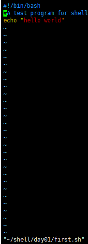
2.2 脚本运行
方法一：需要为文件赋予可执行的权限
方法二：不需要文件有可执行的权限
sh 脚本文件名
source 脚本文件名 #不会启动子线程，通过pstree查看进程树
1 2 3 4 5 6 7 8 9 10 11 12 13 14 15 16 [root@localhost shell]# cd day01 [root@localhost day01]# chmod -x first.sh #取消脚本的可执行权限 [root@localhost day01]# ll 总用量 4 -rw-r--r--. 1 root root 57 9月 29 15:24 first.sh [root@localhost day01]# ./first.sh bash: ./first.sh: 权限不够 [root@localhost day01]# /root/shell/day01/first.sh bash: /root/shell/day01/first.sh: 权限不够 [root@localhost day01]# sh first.sh hello world [root@localhost day01]# source first.sh hello world [root@localhost day01]# ksh first.sh hello world [root@localhost day01]#
通过pstree查看进程树
1 2 3 4 5 6 7 8 9 10 11 12 13 14 15 16 17 18 19 20 [root@localhost day01] systemd─┬─NetworkManager───2*[{NetworkManager}] ├─VGAuthService ├─auditd───{auditd} ├─crond ├─dbus-daemon───{dbus-daemon} ├─firewalld───{firewalld} ├─login───bash ├─lvmetad ├─master─┬─pickup │ └─qmgr ├─polkitd───6*[{polkitd}] ├─rsyslogd───2*[{rsyslogd}] ├─sshd─┬─sshd───bash───ksh───bash───pstree │ └─sshd───sftp-server ├─systemd-journal ├─systemd-logind ├─systemd-udevd ├─tuned───4*[{tuned}] └─vmtoolsd───2*[{vmtoolsd}]
3.变量 3.1 自定义变量
以固定的名称，存放可以有变化的值
定义变量的格式：变量名=变量值 取消变量的格式：unset 变量名 注意事项：
=两边不能有空格，不能使用关键字做变量名，例如ls、cd等
如果有变量名已经存在则覆盖之前的变量值
变量名称有：字母/数字/下划线组成，不能以数字开始
3.2 查看变量
语法格式
1 2 3 4 5 6 7 8 9 10 11 12 13 14 15 16 17 18 19 20 21 22 23 24 25 26 27 28 29 30 [root@localhost ~] [root@localhost ~] 11 [root@localhost ~] 11 [root@localhost ~] 11 [root@localhost ~] [root@localhost ~] 33 [root@localhost ~] bash: a: 未找到命令 [root@localhost ~] bash: 未预期的符号 `)' 附近有语法错误 [root@localhost ~]# a_=22 [root@localhost ~]# echo $a_ 22 [root@localhost ~]# 3a = 33 bash: 3a: 未找到命令 [root@localhost ~]# x=centos [root@localhost ~]# echo $x centos [root@localhost ~]# echo $x7.9 .9 [root@localhost ~]# echo ${x}7.9 centos7.9 [root@localhost ~]# unset x [root@localhost ~]# echo $x [root@localhost ~]#
3.3 变量类型
环境变量（变量名通常大写，由操作系统维护）
位置变量（bash内置变量，存储脚本执行时的参数）
预定义变量（bash内置变量，可以调用但是不可以赋值或修改）
自定义变量（用户自主设置）
环境变量
存储在/etc/profile或~/.bash_profile
命令env可以列出所有的环境变量
常见的环境变量：
PATH(当前路径)、PWD(当前目录)、USER(当前用户)、UID(当前用户id)、HOME(当前目录的家目录)、SHELL(当前应用的解释器)
1 2 3 4 5 6 7 8 9 10 11 12 [root@localhost ~] /usr/local/sbin:/usr/local/bin:/usr/sbin:/usr/bin:/root/bin [root@localhost ~] /root [root@localhost ~] root [root@localhost ~] 0 [root@localhost ~] /root [root@localhost ~] /bin/bash
位置变量
存储脚本执行时的参数
使用$n表示，n为数字序列号
$1、$2、…、${10}、${11}、…
vars.sh
1 2 3 4 5 #!/bin/bash echo $1 echo $2 echo $3
1 2 3 4 5 6 [root@localhost ~] [root@localhost ~] [root@localhost ~] aa bb cc
user.sh
1 2 3 4 #!/bin/bash useradd "$1 " echo "$2 " | passwd --stdin "$1 "
1 2 3 4 5 6 7 [root@localhost ~] [root@localhost ~] [root@localhost ~] 更改用户 tom 的密码 。 passwd：所有的身份验证令牌已经成功更新。 [root@localhost ~] tom:x:1001:1001::/home/tom:/bin/bash
预定义变量
1 2 3 4 5 6 7 8 [root@localhost ~] /etc/hosts [root@localhost ~] 0 [root@localhost ~] ls : 无法访问/yyyyyy: 没有那个文件或目录[root@localhost ~] 2
1 2 3 4 5 6 #!/bin/bash echo $0 echo $$echo $# echo $*
1 2 3 4 5 6 7 [root@localhost ~] [root@localhost ~] [root@localhost ~] /root/shell/day01/pre.sh 13613 4 aa 88 cc 9u
4.变量扩展应用 4.1 引号 多种引号的区别
双引号””：允许扩展，以$引用其他变量
单引号’’：禁止扩展，即便$也视为普通字符
反引号``：将命令的执行输出作为变量值，$()与反引号等效
双引号
单引号
反引号
4.2 read标准输入取值
read从键盘读入变量值完成赋值
格式：read [-p “提示信息”] 变量名
-p可选，-t可以指定超时秒数，-s设置是否在终端显示输入的内容
read.sh
1 2 3 4 5 #!/bin/bash read -p "请输入用户名：" nameread -p "请输入密码：" -s passuseradd "$name " echo "$pass " | passwd --stdin "$name "
1 2 3 4 5 6 7 [root@localhost ~] [root@localhost ~] [root@localhost ~] 请输入用户名：yty 请输入密码：更改用户 yty 的密码 。 passwd：所有的身份验证令牌已经成功更新。 [root@localhost ~]
1 2 3 4 [root@localhost ~] [root@localhost ~] ^C [root@localhost ~]
4.3 变量的作用范围
局部变量
新定义的变量默认只在当前shell环境中有效，无法在子shell环境中使用
全局变量
全局变量在当前shell及子shell环境中均有效
测试
1 2 3 4 5 6 7 8 9 10 11 12 13 14 15 16 17 18 19 20 21 [root@localhost ~] systemd─┬─NetworkManager───3*[{NetworkManager}] ├─VGAuthService ├─agetty ├─auditd───{auditd} ├─crond ├─dbus-daemon───{dbus-daemon} ├─firewalld───{firewalld} ├─lvmetad ├─master─┬─pickup │ └─qmgr ├─polkitd───6*[{polkitd}] ├─rsyslogd───2*[{rsyslogd}] ├─sshd─┬─sshd───bash───pstree │ └─sshd───bash ├─systemd-hostnam ├─systemd-journal ├─systemd-logind ├─systemd-udevd ├─tuned───4*[{tuned}] └─vmtoolsd───2*[{vmtoolsd}]
1 2 3 4 5 [root@localhost ~] [root@localhost ~] 11 [root@localhost ~] [root@localhost ~]
1 2 3 4 5 6 7 8 9 10 11 12 13 14 15 16 17 18 19 20 [root@localhost ~] systemd─┬─NetworkManager───2*[{NetworkManager}] ├─VGAuthService ├─agetty ├─auditd───{auditd} ├─crond ├─dbus-daemon───{dbus-daemon} ├─firewalld───{firewalld} ├─lvmetad ├─master─┬─pickup │ └─qmgr ├─polkitd───6*[{polkitd}] ├─rsyslogd───2*[{rsyslogd}] ├─sshd─┬─sshd───bash───pstree │ └─sshd───bash（定义了x=11）───bash（开启了bash子线程） ├─systemd-journal ├─systemd-logind ├─systemd-udevd ├─tuned───4*[{tuned}] └─vmtoolsd───2*[{vmtoolsd}]
1 2 3 4 5 6 7 [root@localhost ~] [root@localhost ~] 11 [root@localhost ~] [root@localhost ~] [root@localhost ~]
1 2 3 [root@localhost ~] exit [root@localhost ~]
1 2 3 4 5 6 7 8 9 10 11 12 13 14 15 16 17 18 19 20 [root@localhost ~] systemd─┬─NetworkManager───2*[{NetworkManager}] ├─VGAuthService ├─agetty ├─auditd───{auditd} ├─crond ├─dbus-daemon───{dbus-daemon} ├─firewalld───{firewalld} ├─lvmetad ├─master─┬─pickup │ └─qmgr ├─polkitd───6*[{polkitd}] ├─rsyslogd───2*[{rsyslogd}] ├─sshd─┬─sshd───bash───pstree │ └─sshd───bash ├─systemd-journal ├─systemd-logind ├─systemd-udevd ├─tuned───4*[{tuned}] └─vmtoolsd───2*[{vmtoolsd}]
1 2 3 4 5 6 7 8 [root@localhost ~] [root@localhost ~] [root@localhost ~] 88 [root@localhost ~] [root@localhost ~] 88 [root@localhost ~]
1 2 3 4 5 6 7 8 9 10 11 12 13 14 15 16 17 18 19 systemd─┬─NetworkManager───2*[{NetworkManager}] ├─VGAuthService ├─agetty ├─auditd───{auditd} ├─crond ├─dbus-daemon───{dbus-daemon} ├─firewalld───{firewalld} ├─lvmetad ├─master─┬─pickup │ └─qmgr ├─polkitd───6*[{polkitd}] ├─rsyslogd───2*[{rsyslogd}] ├─sshd─┬─sshd───bash───pstree │ └─sshd───bash(定义了一个全局变量Y)───bash(可以访问Y)───bash(可以访问Y) ├─systemd-journal ├─systemd-logind ├─systemd-udevd ├─tuned───4*[{tuned}] └─vmtoolsd───2*[{vmtoolsd}]
5.shell中的运算 5.1 整数运算
四则运算
加法：num1 + num2
减法：num1 - num2
乘法：num1 * num2
除法：num1 / num2
取余运算
算术表达式
格式：$[整数1 运算符 整数2 .. ..]
将计算结果替换表达式本身，可结合echo命令输出
1 2 3 4 5 6 7 8 9 10 11 12 13 14 15 16 17 18 19 20 [root@localhost ~] 9 [root@localhost ~] -7 [root@localhost ~] 8 [root@localhost ~] 8 [root@localhost ~] 0 [root@localhost ~] 1 [root@localhost ~] 0 [root@localhost ~] [root@localhost ~] [root@localhost ~] 5 [root@localhost ~] 6
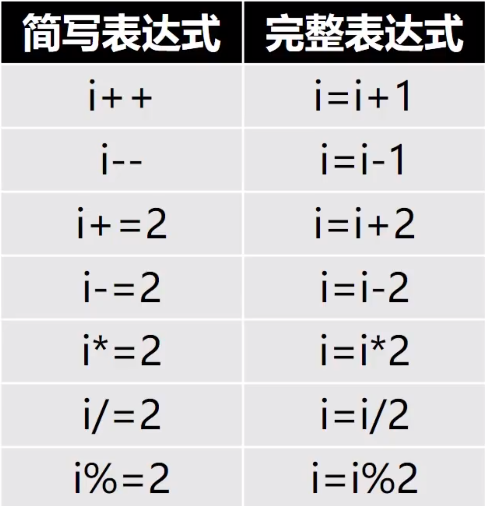
1 2 3 4 5 6 7 8 9 10 11 12 13 14 15 16 17 [root@localhost ~] [root@localhost ~] 6 [root@localhost ~] 6 [root@localhost ~] 7 [root@localhost ~] 7 [root@localhost ~] 6 [root@localhost ~] 3 [root@localhost ~] 6 [root@localhost ~] 0
let命令
1 2 3 4 5 6 7 [root@localhost ~] [root@localhost ~] 6 [root@localhost ~] [root@localhost ~] [root@localhost ~] 5
4.2 小数运算
1 2 3 4 5 6 [root@localhost ~] -bash: 1.1+1.2: 语法错误: 无效的算术运算符 （错误符号是 ".1+1.2" ） [root@localhost ~] -bash: 1.1+1.2: 语法错误: 无效的算术运算符 （错误符号是 ".1+1.2" ） [root@localhost ~] -bash: let : i=1.2: 语法错误: 无效的算术运算符 （错误符号是 ".2" ）
可以通过计算器软件bc实现小数运算
yum安装bc计算器
bc支持交互式和非交互式两种方式计算，scale=n可以约束小数位
bc计算器
1 2 3 4 5 6 7 8 9 10 11 12 13 14 15 16 17 18 19 [root@localhost ~] bc 1.06.95 Copyright 1991-1994, 1997, 1998, 2000, 2004, 2006 Free Software Foundation, Inc. This is free software with ABSOLUTELY NO WARRANTY. For details type `warranty'. 1.5+2.3 3.8 3.8+3 6.8 2.5*6.3 15.7 10/2 5 scale=2 10/2 5.00 10/3 3.33 quit
1 2 3 4 5 6 7 8 9 10 [root@localhost ~] [root@localhost ~] 3.5 [root@localhost ~] 3.5 29.3 [root@localhost ~] 5.00 [root@localhost ~] 5.000
bc支持比较运算符：>、>=、<、<=、==、!=
1 2 3 4 [root@localhost ~] 0 [root@localhost ~] 1
6.综合案例 6.1 监控脚本之显示硬件信息
echo命令
编写info.sh脚本文件
1 2 3 4 5 6 7 8 9 10 11 12 13 14 15 16 #!/bin/bash echo -e "\033[34m------服务器硬件信息------\033[0m" echo -e "\033[32m网卡信息\033[0m" ifconfig ens33 | grep "inet " echo -e "\033[32m内存的剩余容量信息：\033[0m" grep MemAvailable /proc/meminfo echo -e "\033[32m磁盘根分区的使用情况：\033[0m" df -h /echo -e "\033[32m本机CPU型号信息：\033[0m" grep "model name" /proc/cpuinfo
6.2 数据计算
编写calc.sh脚本文件
1 2 3 4 5 6 7 8 9 10 11 12 13 14 15 16 17 18 19 20 21 22 23 #!/bin/bash read -p "请输入一个正整数：" numsum =$[num*(num+1)/2]echo -e "\033[32m$num 以内整数和是：$sum \033[0m" read -p "请输入三角形底边长度：" bottomread -p "请输入三角形高度：" hightA=$(echo "scale=1;1/2*$bottom *$hight " | bc) echo -e "\033[32m三角形面积是：$A \033[0m" read -p "请输入梯形上底边长度：" aread -p "请输入梯形下底边长度：" bread -p "请输入梯形高度：" hA=$(echo "scale=2;($a +$b )*$h /2" | bc) echo -e "\033[32m梯形面积是：$A \033[0m" read -p "请输入圆的半径：" rA=$(echo "scale=2;3.14*$r ^2" | bc) echo -e "\033[32m圆的面积是：$A \033[0m"
6.3 自动配置YUM源
编写yum.sh脚本文件
1 2 3 4 5 6 7 8 #!/bin/bash URL=ftp://192.168.1.25/centos echo "[centos] name=centos baseurl=$URL gpgcheck=0" > /etc/yum.repos.d/iyum.repo
1 2 3 4 5 6 7 8 9 10 11 [root@localhost /] [root@localhost /] [root@localhost /] CentOS-Base.repo CentOS-Debuginfo.repo CentOS-Media.repo CentOS-Vault.repo CentOS-CR.repo CentOS-fasttrack.repo CentOS-Sources.repo CentOS-x86_64-kernel.repo [root@localhost /] [root@localhost /] [centos] name=centos baseurl=ftp://192.168.1.25/centos gpgcheck=0
7.条件测试
shell脚本的智能化
使shell脚本获得识别能力
为命令的执行提供最直接的识别依据
文件或目录的读/写状态
数值的大小
字符串是否匹配
多条件组合
7.1 test测试操作
语法格式
基本语法
是否为空[ -z 字符串 ]
等于[ 字符串1 == 字符串2 ]
不等于[ 字符串1 != 字符串2 ]
1 2 3 4 5 6 7 8 9 10 11 12 13 14 15 16 17 18 19 20 21 22 23 24 25 26 [root@localhost /] [root@localhost /] 0 [root@localhost /] [root@localhost /] [root@localhost /] 1 [root@localhost /] [root@localhost /] 0 [root@localhost /] [root@localhost /] 1 [root@localhost /] [root@localhost /] 0 [root@localhost /] [root@localhost /] 1 [root@localhost /] [root@localhost /] 0 [root@localhost /] [root@localhost /] 1 [root@localhost /]
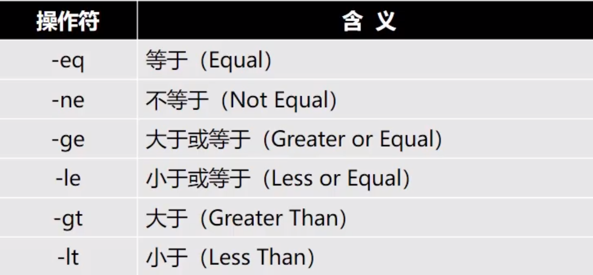
1 2 3 4 5 6 7 8 9 10 11 12 [root@localhost /] [root@localhost /] 0 [root@localhost /] [root@localhost /] root pts/0 2022-09-29 21:09 (192.168.1.180) [root@localhost /] 1 [root@localhost /] [root@localhost /] 1 [root@localhost /]
1 2 3 4 5 6 7 8 9 10 11 12 13 14 15 [root@localhost /] [root@localhost /] 0 [root@localhost /] [root@localhost /] 0 [root@localhost /] [root@localhost /] 1 [root@localhost /] [root@localhost /] 1 [root@localhost /] [root@localhost /] 0
7.2 控制操作符
组合多个命令
1 2 3 4 5 6 7 8 [root@localhost /] bin boot dev etc home lib lib64 media mnt opt proc root run sbin srv sys tmp usr var [root@localhost /] [root@localhost /] bin boot dev etc home lib lib64 media mnt opt proc root run sbin srv sys tmp usr var [root@localhost /] [root@localhost /] Y
7.3 案例：监控脚本
tr -s 删除多余重复的字串
1 2 3 4 5 [root@localhost /] a b c [root@localhost /] acaq [root@localhost /]
cut 过滤数据
1 2 3 4 5 6 7 8 9 10 11 12 13 14 15 16 17 18 19 20 21 22 [root@localhost /] root bin daemon adm lp sync shutdown halt mail operator games ftp nobody systemd-network dbus polkitd sshd postfix test tom yty
编写info.sh脚本文件
1 2 3 4 5 6 7 8 9 10 11 12 13 14 15 16 17 18 19 20 21 22 23 24 25 26 27 28 29 30 #!/bin/bash local_time=$(date "+%Y-%m-%d %H:%M:%S" ) local_ip=$(ifconfig ens33 | grep netmask | tr -s " " | cut -d" " -f3) free_mem=$(cat /proc/meminfo | grep Avai | tr -s " " | cut -d" " -f2) free_disk=$(df | grep "/$" | tr -s " " | cut -d' ' -f4) cpu_load=$(cat /proc/loadavg | cut -d' ' -f3) login_user=$(who | wc -l) procs=$(ps aux | wc -l) [ $free_mem -lt 1048576 ] && echo "$local_time Free memory not enough.Free_mem:$free_mem on $local_ip " | mail -s Warning root@localhost [ $free_mem -lt 10485760 ] && echo "$local_time Free disk not enough.root_free_disk:$free_disk on $local_ip " | mail -s Warning root@localhost result=$(echo "$cpu_load > 4" | bc) [ $result -eq 1 ] && echo "$local_time CPU load to high,CPU 15 averageload:$cpu_load on $local_ip " | mail -s Warning root@localhost [ $login_user -gt 3 ] && echo "$local_time Too many user.$login_user users login to $local_ip " | mail -s Warning root@localhost [ $procs -gt 500 ] && echo "$local_time Too many procs.$procs procs are runing on $local_ip " | mail -s Warning root@localhost
1 2 3 4 5 6 7 8 9 10 11 12 13 14 15 16 17 [root@localhost ~] [root@localhost ~] [root@localhost ~] 已加载插件：fastestmirror Loading mirror speeds from cached hostfile * base: mirrors.ustc.edu.cn * extras: mirrors.ustc.edu.cn * updates: mirrors.ustc.edu.cn 软件包 mailx-12.5-19.el7.x86_64 已安装并且是最新版本 无须任何处理 [root@localhost ~] [root@localhost ~] Heirloom Mail version 12.5 7/5/10. Type ? for help . "/var/spool/mail/root" : 1 message 1 new>N 1 root Fri Sep 30 12:15 18/688 "Warning" & exit [root@localhost ~]
8.if、for、while、case 8.1 if 8.1.1 if单分支判断
语法
当“条件成立”时执行命令序列
否则，不执行如何操作
应用案例
user_v1.sh
1 2 3 4 5 6 7 8 9 10 11 12 13 #!/bin/bash read -p "请输入用户名：" userread -s -p "请输入密码：" passif [ ! -z "$user " ];then useradd "$user " fi if [ ! -z "$pass " ];then echo "$pass " | passwd --stdin "$user " fi echo
1 2 3 4 5 6 7 8 9 10 11 [root@localhost ~] [root@localhost ~] [root@localhost ~] 请输入用户名： 请输入密码： [root@localhost ~] 请输入用户名：yty 请输入密码：更改用户 yty 的密码 。 passwd：所有的身份验证令牌已经成功更新。 [root@localhost ~]
user_v2.sh
1 2 3 4 5 6 7 8 9 10 read -p "请输入用户名：" userread -s -p "请输入密码：" passif [ ! -z "$user " ] && [ ! -z "$pass " ];then useradd "$user " echo "$pass " | passwd --stdin "$user " fi echo
1 2 3 4 5 6 7 8 9 [root@localhost ~] [root@localhost ~] [root@localhost ~] 请输入用户名： 请输入密码： [root@localhost ~] 请输入用户名：yty2 请输入密码： [root@localhost ~]
8.1.2 if双分支判断
语法
当“条件成立”时执行命令序列1
否则，执行命令序列2
应用案例
if_ping.sh
1 2 3 4 5 6 7 8 9 10 11 12 13 14 15 16 #!/bin/bash if [ -z "$1 " ];then echo -n "用法：脚本" echo -e "\033[32m域名或IP\033[0m" exit fi ping -c2 -i0.1 -W1 "$1 " &>/dev/null if [ $? -eq 0 ];then echo "$1 is up" else echo "$1 is down" fi
1 2 3 4 5 6 7 8 9 10 [root@localhost ~] [root@localhost ~] [root@localhost ~] 用法：脚本域名或IP [root@localhost ~] 192.168.1.125 is down [root@localhost ~] 192.168.1.25 is up [root@localhost ~] www.baidu.com is up
8.1.3 if多分支判断
语法
相当于if语句嵌套
针对多个条件分别执行不同的操作
应用案例
guess_num.sh
1 2 3 4 5 6 7 8 9 10 11 12 #!/bin/bash clear num=$[RANDOM%10+1] read -p "请输入1-10之间的整数：" guessif [ $guess -eq $num ];then echo "恭喜你，猜对了，就是：$num " elif [ $guess -lt $num ];then echo "Oops,猜小了." else echo "Oops,猜大了." fi
1 2 3 4 5 6 7 8 9 [root@localhost ~] [root@localhost ~] [root@localhost ~] 请输入1-10之间的整数：3 恭喜你，猜对了，就是：3 [root@localhost ~] 请输入1-10之间的整数：5 Oops,猜大了. [root@localhost ~]
8.2 for
语法
应用案例
for_demo1.sh
1 2 3 4 5 6 #!/bin/bash for i in 1 8 ab 99 qqdo echo "I am $i " done
1 2 3 4 5 6 7 8 9 [root@localhost ~] [root@localhost ~] [root@localhost ~] I am 1 I am 8 I am ab I am 99 I am qq [root@localhost ~]
for_demo2.sh
1 2 3 4 5 6 #!/bin/bash for ((i=1;i<5;i++))do echo "I am $i " done
1 2 3 4 5 6 7 8 [root@localhost ~] [root@localhost ~] [root@localhost ~] I am 1 I am 2 I am 3 I am 4 [root@localhost ~]
for_user.sh
1 2 3 4 5 6 7 #!/bin/bash for i in {1..10}do useradd test $i echo "123456" | passwd --stdin test $i done
user.txt
user.sh
1 2 3 4 5 6 7 #!/bin/bash for i in $(cat user.txt)do useradd "$i " echo "123456" | passwd --stdin "$i " done
99.sh
1 2 3 4 5 6 7 8 for ((i=1;i<=9;i++))do for ((j=1;j<=i;j++)) do echo -n "$i *$j =$[i*j] " done echo done
1 2 3 4 5 6 7 8 9 10 11 12 13 [root@localhost ~] [root@localhost ~] [root@localhost ~] 1*1=1 2*1=2 2*2=4 3*1=3 3*2=6 3*3=9 4*1=4 4*2=8 4*3=12 4*4=16 5*1=5 5*2=10 5*3=15 5*4=20 5*5=25 6*1=6 6*2=12 6*3=18 6*4=24 6*5=30 6*6=36 7*1=7 7*2=14 7*3=21 7*4=28 7*5=35 7*6=42 7*7=49 8*1=8 8*2=16 8*3=24 8*4=32 8*5=40 8*6=48 8*7=56 8*8=64 9*1=9 9*2=18 9*3=27 9*4=36 9*5=45 9*6=54 9*7=63 9*8=72 9*9=81 [root@localhost ~]
8.3 while
语法
应用案例
while_1.sh
1 2 3 4 5 6 #!/bin/bash i=1 while [ $i -le 5 ]do echo $i done
while_2.sh
1 2 3 4 5 6 7 #!/bin/bash i=1 while [ $i -le 5 ]do echo $i let i++ done
1 2 3 4 5 6 7 8 9 [root@localhost ~] [root@localhost ~] [root@localhost ~] 1 2 3 4 5 [root@localhost ~]
死循环脚本
1 2 3 4 5 #!/bin/bash while :do echo hello world done
uaddwhile.sh
1 2 3 4 5 6 7 8 #!/bin/bash PREFIX="tuser" ;i=1 while [ $i -le 5 ]do useradd ${PREFIX} $i echo "123456" | passwd --stdin ${PREFIX} $i &>/dev/null let i++ done
udelwhile.sh
1 2 3 4 5 6 7 #!/bin/bash PREFIX="tuser" ;i=1 while [ $i -le 5 ]do userdel -r ${PREFIX} $i let i++ done
1 2 3 4 5 6 7 8 9 10 11 12 13 14 15 16 17 18 19 20 21 22 23 24 25 26 27 28 29 30 31 32 33 34 35 36 37 38 39 40 41 42 43 44 45 46 47 48 49 50 51 52 53 54 [root@localhost ~] [root@localhost ~] [root@localhost ~] [root@localhost ~] root:x:0:0:root:/root:/bin/bash bin:x:1:1:bin:/bin:/sbin/nologin daemon:x:2:2:daemon:/sbin:/sbin/nologin adm:x:3:4:adm:/var/adm:/sbin/nologin lp:x:4:7:lp:/var/spool/lpd:/sbin/nologin sync :x:5:0:sync :/sbin:/bin/syncshutdown:x:6:0:shutdown:/sbin:/sbin/shutdown halt:x:7:0:halt:/sbin:/sbin/halt mail:x:8:12:mail:/var/spool/mail:/sbin/nologin operator:x:11:0:operator:/root:/sbin/nologin games:x:12:100:games:/usr/games:/sbin/nologin ftp:x:14:50:FTP User:/var/ftp:/sbin/nologin nobody:x:99:99:Nobody:/:/sbin/nologin systemd-network:x:192:192:systemd Network Management:/:/sbin/nologin dbus:x:81:81:System message bus:/:/sbin/nologin polkitd:x:999:998:User for polkitd:/:/sbin/nologin sshd:x:74:74:Privilege-separated SSH:/var/empty/sshd:/sbin/nologin postfix:x:89:89::/var/spool/postfix:/sbin/nologin yty:x:1000:1000::/home/yty:/bin/bash yty2:x:1001:1001::/home/yty2:/bin/bash tuser1:x:1002:1002::/home/tuser1:/bin/bash tuser2:x:1003:1003::/home/tuser2:/bin/bash tuser3:x:1004:1004::/home/tuser3:/bin/bash tuser4:x:1005:1005::/home/tuser4:/bin/bash tuser5:x:1006:1006::/home/tuser5:/bin/bash [root@localhost ~] [root@localhost ~] [root@localhost ~] [root@localhost ~] root:x:0:0:root:/root:/bin/bash bin:x:1:1:bin:/bin:/sbin/nologin daemon:x:2:2:daemon:/sbin:/sbin/nologin adm:x:3:4:adm:/var/adm:/sbin/nologin lp:x:4:7:lp:/var/spool/lpd:/sbin/nologin sync :x:5:0:sync :/sbin:/bin/syncshutdown:x:6:0:shutdown:/sbin:/sbin/shutdown halt:x:7:0:halt:/sbin:/sbin/halt mail:x:8:12:mail:/var/spool/mail:/sbin/nologin operator:x:11:0:operator:/root:/sbin/nologin games:x:12:100:games:/usr/games:/sbin/nologin ftp:x:14:50:FTP User:/var/ftp:/sbin/nologin nobody:x:99:99:Nobody:/:/sbin/nologin systemd-network:x:192:192:systemd Network Management:/:/sbin/nologin dbus:x:81:81:System message bus:/:/sbin/nologin polkitd:x:999:998:User for polkitd:/:/sbin/nologin sshd:x:74:74:Privilege-separated SSH:/var/empty/sshd:/sbin/nologin postfix:x:89:89::/var/spool/postfix:/sbin/nologin yty:x:1000:1000::/home/yty:/bin/bash yty2:x:1001:1001::/home/yty2:/bin/bash [root@localhost ~]
guess_num2.sh
1 2 3 4 5 6 7 8 9 10 11 12 13 14 15 #!/bin/bash num=$[RANDOM%10+1] while :do read -p "请输入1-10之间的整数：" guess if [ $guess -eq $num ];then echo "恭喜你，猜对了，就是：$num " exit elif [ $guess -lt $num ];then echo "Oops,猜小了." else echo "Oops,猜大了." fi done
1 2 3 4 5 6 7 8 9 10 11 12 13 14 [root@localhost ~] [root@localhost ~] [root@localhost ~] 请输入1-10之间的整数：2 Oops,猜小了. 请输入1-10之间的整数：3 Oops,猜小了. 请输入1-10之间的整数：8 Oops,猜大了. 请输入1-10之间的整数：5 Oops,猜大了. 请输入1-10之间的整数：4 恭喜你，猜对了，就是：4 [root@localhost ~]
8.4 判断循环综合案例 8.4.1 一键部署FTP服务
install_vsftp.sh
1 2 3 4 5 6 7 8 #!/bin/bash if rpm -q vsftpd &> /dev/null;then echo "vsftpd已安装." else yum -y install vsftpd fi systemctl restart vsftpd
1 2 3 4 5 6 7 8 9 10 11 12 13 14 15 16 17 18 19 20 21 22 23 24 25 26 27 28 29 30 31 32 33 34 35 36 37 38 39 40 41 42 43 44 45 [root@localhost ~] [root@localhost ~] 未安装软件包 vsftpd [root@localhost ~] [root@localhost ~] 已加载插件：fastestmirror Loading mirror speeds from cached hostfile * base: mirrors.ustc.edu.cn * extras: mirrors.tuna.tsinghua.edu.cn * updates: mirrors.ustc.edu.cn 正在解决依赖关系 --> 正在检查事务 ---> 软件包 vsftpd.x86_64.0.3.0.2-29.el7_9 将被 安装 --> 解决依赖关系完成 依赖关系解决 ================================================================================================================================================================== Package 架构 版本 源 大小 ================================================================================================================================================================== 正在安装: vsftpd x86_64 3.0.2-29.el7_9 updates 173 k 事务概要 ================================================================================================================================================================== 安装 1 软件包 总下载量：173 k 安装大小：353 k Downloading packages: vsftpd-3.0.2-29.el7_9.x86_64.rpm | 173 kB 00:00:00 Running transaction check Running transaction test Transaction test succeeded Running transaction 正在安装 : vsftpd-3.0.2-29.el7_9.x86_64 1/1 验证中 : vsftpd-3.0.2-29.el7_9.x86_64 1/1 已安装: vsftpd.x86_64 0:3.0.2-29.el7_9 完毕！ [root@localhost ~] vsftpd已安装. [root@localhost ~]
8.4.2 监控网络流量
net.sh
1 2 3 4 5 6 7 8 9 #!/bin/bash while :do clear echo '本地网卡ens33流量信息如下：' ifconfig ens33 | grep "RX pack" | tr -s " " | cut -d" " -f6 ifconfig ens33 | grep "TX pack" | tr -s " " | cut -d" " -f6 sleep 1 done
1 2 3 4 5 6 7 8 9 10 11 12 13 14 15 16 17 18 19 20 21 22 23 24 25 26 27 28 29 30 31 32 33 34 35 36 [root@localhost ~] [root@localhost ~] [root@localhost ~] 本地网卡ens33流量信息如下： 2359499 2727730 本地网卡ens33流量信息如下： 2359559 2728072 本地网卡ens33流量信息如下： 2359679 2728414 本地网卡ens33流量信息如下： 2359859 2728816 本地网卡ens33流量信息如下： 2359979 2729158 本地网卡ens33流量信息如下： 2360099 2729500 本地网卡ens33流量信息如下： 2360219 2729842 本地网卡ens33流量信息如下： 2360339 2730184 本地网卡ens33流量信息如下： 2360459 2730526 本地网卡ens33流量信息如下： 2360579 2730868 本地网卡ens33流量信息如下： 2360699 2731210
8.4.3 统计闰年
leap.sh
1 2 3 4 5 6 7 8 9 #!/bin/bash for i in {1..5000}do if [[ $[i%4] -eq 0 && $[i%100] -ne 0 || $[i%400] -eq 0 ]];then echo "$i :是闰年" else echo "$i :不是闰年" fi done
8.4.4 计算等差数列之和
sum.sh
1 2 3 4 5 6 7 8 9 #!/bin/bash sum =0;i=1while [ $i -le 100 ]do let sum +=$i let i++ done echo -e "1+2+3+...+100的总和为：\033[1;32m$sum \033[0m"
8.5 case语句
语法
检查、判断变量的值
效果类似于多分支If语句
如果与预设值相匹配，则执行对应的操作
命令序列最后必须以分号结尾
应用案例
判断用户的输入
输入redhat返回redora
输入fedora返回redhat
输入其它返回用法
case1.sh
1 2 3 4 5 6 7 8 9 10 #!/bin/bash read -p "请输入redhat|fedora:" keycase $key in redhat) echo "fedora" ;; fedora) echo "redhat" ;; *) echo "必须输入redhat或fedora." esac
1 2 3 4 5 6 7 8 9 10 11 12 [root@localhost ~] [root@localhost ~] [root@localhost ~] 请输入redhat|fedora:redhat fedora [root@localhost ~] 请输入redhat|fedora:fedora redhat [root@localhost ~] 请输入redhat|fedora:wwwww 必须输入redhat或fedora. [root@localhost ~]
case2.sh
1 2 3 4 5 6 7 8 9 10 #!/bin/bash read -p "Are you sure?[y/n]:" surecase $sure in y|Y|yes |YES) echo "you enter $sure ,OK" ;; n|N|NO|no) echo "you enter $sure ,OVER" ;; *) echo "error" ;; esac
1 2 3 4 5 6 7 8 9 10 11 12 13 14 15 [root@localhost ~] [root@localhost ~] [root@localhost ~] Are you sure?[y/n]:y you enter y,OK [root@localhost ~] Are you sure?[y/n]:Ye^H^H^H error [root@localhost ~] Are you sure?[y/n]:YES you enter YES,OK [root@localhost ~] Are you sure?[y/n]:NO you enter NO,OVER [root@localhost ~]
stone.sh
1 2 3 4 5 6 7 8 9 10 11 12 13 14 15 16 17 18 19 20 21 22 23 24 25 26 27 28 29 30 31 32 33 34 35 36 37 38 39 40 #!/bin/bash game=(石头 剪刀 布) num=$[RANDOM%3] computer=${game[$num]} echo "请根据下列提示选择您的出拳手势：" echo "1.石头" echo "2.剪刀" echo "3.布" read -p "请选择1-3:" personcase $person in 1) if [ $num -eq 0 ];then echo "平局" elif [ $num -eq 1 ];then echo "你赢" else echo "计算机赢" fi ;; 2) if [ $num -eq 0 ];then echo "计算机赢" elif [ $num -eq 1 ];then echo "平局" else echo "你赢" fi ;; 3) if [ $num -eq 0 ];then echo "你赢" elif [ $num -eq 1 ];then echo "计算机赢" else echo "平局" fi ;; *) echo "必须输入1-3的数字" esac
1 2 3 4 5 6 7 8 9 10 11 12 13 14 15 16 17 18 19 20 21 22 23 [root@localhost ~] [root@localhost ~] [root@localhost ~] 请根据下列提示选择您的出拳手势： 1.石头 2.剪刀 3.布 请选择1-3:5 必须输入1-3的数字 [root@localhost ~] 请根据下列提示选择您的出拳手势： 1.石头 2.剪刀 3.布 请选择1-3:2 你赢 [root@localhost ~] 请根据下列提示选择您的出拳手势： 1.石头 2.剪刀 3.布 请选择1-3:1 计算机赢
8.6 中断与退出
脚本中断和退出的命令
continue可以结束单词循环
break可以结束循环体
exit可以退出脚本
continue
break
exit
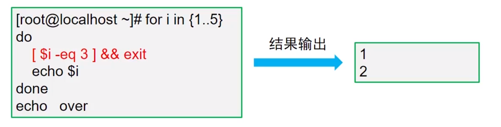
应用案例
jixuan.sh
1 2 3 4 5 6 7 8 9 10 11 12 13 14 15 16 17 18 19 20 21 22 23 #!/bin/bash echo "---机选双色球---" red_ball="" blue_ball="" while :do clear tmp=$[RANDOM%33+1] echo "$red_ball " | grep -q -w $tmp && continue red_ball+=" $tmp " echo -en "\033[91m$red_ball \033[0m" word=$(echo "$red_ball " | wc -w) if [ $word -eq 6 ];then blue_ball=$[RANDOM%16+1] echo -e "\033[34m $blue_ball \033[0m" break fi sleep 0.5 done
9.数组
数组也是一个变量，是一个有点特殊的变量
存储多个数据的集合就是数组
1 2 3 4 5 6 7 8 9 10 [root@localhost ~] [root@localhost ~] 11 [root@localhost ~] 11 [root@localhost ~] 22 [root@localhost ~] 88 [root@localhost ~]
10.字符串处理和变量初始化 10.1 字符串处理 10.1.1 字串截取
语法格式
1 2 ${变量:起始位置:长度} 统计变量长度：${#变量名}
1 2 3 4 5 6 7 [root@localhost ~] [root@localhost ~] 15 [root@localhost ~] 122 [root@localhost ~] 24252
10.1.2 字串替换
语法格式
1 2 3 4 5 6 7 8 9 10 11 12 13 14 [root@localhost ~] [root@localhost ~] 15 [root@localhost ~] 122 [root@localhost ~] 24252 [root@localhost ~] 1X2425235364646 [root@localhost ~] 1224252Y5Y64646 [root@localhost ~] 1Y425235364646 [root@localhost ~]
10.1.3 字串掐头
语法
1 2 3 4 5 6 7 8 9 [root@localhost ~] [root@localhost ~] root:x:0:0:root:/root:/bin/bash [root@localhost ~] x:0:0:root:/root:/bin/bash [root@localhost ~] /bin/bash [root@localhost ~] root:x:0:0:root:/root:/bin/bash
10.1.4 字串去尾
语法
1 2 3 4 5 6 7 8 [root@localhost ~] root:x:0:0:root:/root:/bin/bash [root@localhost ~] root:x:0:0:root:/root [root@localhost ~] root [root@localhost ~] root:x:0:0:root:/root:/bin/bash
10.1.5 应用案例
rename1.sh
1 2 3 4 5 #!/bin/bash for i in $(ls *.txt)do mv $i ${i%.*} .doc done
1 2 3 4 5 6 7 8 [root@localhost ~] [root@localhost ~] anaconda-ks.cfg a.txt b.txt c.txt d.txt e.txt f.txt shell [root@localhost ~] [root@localhost ~] [root@localhost ~] [root@localhost ~] a.doc anaconda-ks.cfg b.doc c.doc d.doc e.doc f.doc shell
rename2.sh
1 2 3 4 5 #!/bin/bash for i in $(ls *.$1 )do mv $i ${i%.*} .$2 done
1 2 3 4 5 6 7 8 9 10 11 12 13 14 [root@localhost ~] [root@localhost ~] anaconda-ks.cfg a.txt b.txt c.txt d.txt e.txt f.txt shell [root@localhost ~] [root@localhost ~] [root@localhost ~] [root@localhost ~] a.doc anaconda-ks.cfg b.doc c.doc d.doc e.doc f.doc shell [root@localhost ~] [root@localhost ~] [root@localhost ~] [root@localhost ~] a.jpg anaconda-ks.cfg b.jpg c.jpg d.jpg e.jpg f.jpg shell [root@localhost ~]
10.2 变量初始化
语法
变量有值，则返回该变量的值
变量无值，则返回初始值
格式：${变量:-关键词}
1 2 3 4 5 [root@localhost ~] [root@localhost ~] 123 [root@localhost ~] abc
应用案例
user.sh
1 2 3 4 5 6 7 8 9 10 11 12 #!/bin/bash read -p "请输入用户名:" inameif [ -z "$iname " ];then echo -e "\033[32m未输入用户名，脚本即将退出...\033[0m" exit fi read -p "请输入密码:" ipassipass=${ipass:-123456} useradd "$iname " echo "$ipass " | passwd --stdin "$iname "
1 2 3 4 5 6 7 8 9 10 11 12 13 14 15 [root@localhost ~] [root@localhost ~] [root@localhost ~] 请输入用户名: 未输入用户名，脚本即将退出... [root@localhost ~] 请输入用户名:yangtongyu 请输入密码: 更改用户 yangtongyu 的密码 。 passwd：所有的身份验证令牌已经成功更新。 [root@localhost ~] 请输入用户名:yangty 请输入密码:000000 更改用户 yangty 的密码 。 passwd：所有的身份验证令牌已经成功更新。
11.函数
语法格式
在Shell环境中，将一些需要重复使用的操作，定义为公共的语句块，即可称为函数
函数传递参数
调用已定义的函数
函数传值
格式：函数名 值1 值 2 .. ..
传递的值作为函数的”位置参数”
1 2 3 4 5 6 7 8 9 10 11 12 13 [root@localhost ~] > echo "hello world" > echo "compute cloud" > } [root@localhost ~] hello world compute cloud [root@localhost ~] hello world compute cloud [root@localhost ~] hello world compute cloud
1 2 3 4 5 6 7 [root@localhost ~] > echo "function msg" > } [root@localhost ~] function msg[root@localhost ~] function msg
应用案例
1 2 3 4 5 6 7 [root@localhost ~] > echo $[$1 +$2 ] > } [root@localhost ~] 3 [root@localhost ~] 16
color.sh
1 2 3 4 5 6 7 8 9 #!/bin/bash cecho echo -e "\033[$1m$2 \033[0m" } cecho 31 Ok cecho 32 OK cecho 33 OK cecho 34 OK cecho 35 Error
mutiping.sh
1 2 3 4 5 6 7 8 9 10 11 12 13 14 15 #!/bin/bash myping ping -c3 -i0.2 -W1 $1 &> /dev/null if [ $? -eq 0 ];then echo "$1 is up" else echo "$1 is down" fi } for i in {1..254}do myping "192.168.1.$i " & done wait
1 2 3 4 5 6 7 8 9 10 11 12 13 14 15 16 17 18 19 20 21 22 23 24 25 26 27 28 29 30 31 32 33 34 35 36 37 38 39 40 41 42 43 44 45 46 47 48 49 50 51 52 53 54 55 56 57 58 59 60 61 62 63 64 65 66 67 68 69 70 71 72 73 74 75 76 77 78 79 80 81 82 83 84 85 86 87 88 89 90 91 92 93 94 95 96 97 98 99 100 101 102 103 104 105 106 107 108 109 110 111 112 113 114 115 116 117 118 119 120 121 122 123 124 125 126 127 128 129 130 131 132 133 134 135 136 137 138 139 140 141 142 143 144 145 146 147 148 149 150 151 152 153 154 155 156 157 158 159 160 161 162 163 164 165 166 167 168 169 170 171 172 173 174 175 176 177 178 179 180 181 182 183 184 185 186 187 188 189 190 191 192 193 194 195 196 197 198 199 200 201 202 203 204 205 206 207 208 209 210 211 212 213 214 215 216 217 218 219 220 221 222 223 224 225 226 227 228 229 230 231 232 233 234 235 236 237 238 239 240 241 242 243 244 245 246 247 248 249 250 251 252 253 254 255 256 257 258 [root@localhost ~] [root@localhost ~] [root@localhost ~] 192.168.1.1 is up 192.168.1.25 is up 192.168.1.14 is down 192.168.1.16 is down 192.168.1.19 is down 192.168.1.15 is down 192.168.1.17 is down 192.168.1.6 is down 192.168.1.11 is down 192.168.1.2 is down 192.168.1.7 is down 192.168.1.3 is down 192.168.1.4 is down 192.168.1.9 is down 192.168.1.8 is down 192.168.1.13 is down 192.168.1.5 is down 192.168.1.18 is down 192.168.1.10 is down 192.168.1.12 is down 192.168.1.20 is down 192.168.1.31 is down 192.168.1.101 is down 192.168.1.92 is down 192.168.1.86 is down 192.168.1.77 is down 192.168.1.21 is down 192.168.1.50 is down 192.168.1.89 is down 192.168.1.90 is down 192.168.1.91 is down 192.168.1.49 is down 192.168.1.95 is down 192.168.1.35 is down 192.168.1.83 is down 192.168.1.102 is down 192.168.1.70 is down 192.168.1.61 is down 192.168.1.42 is down 192.168.1.71 is down 192.168.1.88 is down 192.168.1.43 is down 192.168.1.97 is down 192.168.1.56 is down 192.168.1.60 is down 192.168.1.98 is down 192.168.1.23 is down 192.168.1.99 is down 192.168.1.58 is down 192.168.1.24 is down 192.168.1.52 is down 192.168.1.82 is down 192.168.1.76 is down 192.168.1.34 is down 192.168.1.65 is down 192.168.1.64 is down 192.168.1.55 is down 192.168.1.36 is down 192.168.1.37 is down 192.168.1.39 is down 192.168.1.45 is down 192.168.1.54 is down 192.168.1.72 is down 192.168.1.66 is down 192.168.1.74 is down 192.168.1.81 is down 192.168.1.44 is down 192.168.1.69 is down 192.168.1.94 is down 192.168.1.22 is down 192.168.1.96 is down 192.168.1.53 is down 192.168.1.26 is down 192.168.1.27 is down 192.168.1.47 is down 192.168.1.79 is down 192.168.1.28 is down 192.168.1.38 is down 192.168.1.33 is down 192.168.1.30 is down 192.168.1.29 is down 192.168.1.40 is down 192.168.1.48 is down 192.168.1.51 is down 192.168.1.62 is down 192.168.1.59 is down 192.168.1.68 is down 192.168.1.78 is down 192.168.1.73 is down 192.168.1.80 is down 192.168.1.84 is down 192.168.1.93 is down 192.168.1.100 is down 192.168.1.32 is down 192.168.1.87 is down 192.168.1.41 is down 192.168.1.67 is down 192.168.1.105 is down 192.168.1.103 is down 192.168.1.112 is down 192.168.1.120 is down 192.168.1.106 is down 192.168.1.117 is down 192.168.1.109 is down 192.168.1.104 is down 192.168.1.119 is down 192.168.1.114 is down 192.168.1.113 is down 192.168.1.110 is down 192.168.1.108 is down 192.168.1.115 is down 192.168.1.107 is down 192.168.1.116 is down 192.168.1.111 is down 192.168.1.165 is up 192.168.1.75 is down 192.168.1.85 is down 192.168.1.57 is down 192.168.1.63 is down 192.168.1.118 is down 192.168.1.46 is down 192.168.1.121 is down 192.168.1.126 is down 192.168.1.124 is down 192.168.1.123 is down 192.168.1.125 is down 192.168.1.122 is down 192.168.1.131 is down 192.168.1.129 is down 192.168.1.127 is down 192.168.1.135 is down 192.168.1.134 is down 192.168.1.133 is down 192.168.1.130 is down 192.168.1.128 is down 192.168.1.132 is down 192.168.1.136 is down 192.168.1.137 is down 192.168.1.138 is down 192.168.1.139 is down 192.168.1.142 is down 192.168.1.141 is down 192.168.1.143 is down 192.168.1.144 is down 192.168.1.145 is down 192.168.1.146 is down 192.168.1.149 is down 192.168.1.147 is down 192.168.1.151 is down 192.168.1.155 is down 192.168.1.154 is down 192.168.1.150 is down 192.168.1.140 is down 192.168.1.148 is down 192.168.1.157 is down 192.168.1.153 is down 192.168.1.152 is down 192.168.1.160 is down 192.168.1.156 is down 192.168.1.159 is down 192.168.1.161 is down 192.168.1.158 is down 192.168.1.162 is down 192.168.1.174 is down 192.168.1.168 is down 192.168.1.185 is down 192.168.1.181 is down 192.168.1.171 is down 192.168.1.170 is down 192.168.1.169 is down 192.168.1.177 is down 192.168.1.163 is down 192.168.1.164 is down 192.168.1.166 is down 192.168.1.180 is down 192.168.1.179 is down 192.168.1.176 is down 192.168.1.178 is down 192.168.1.184 is down 192.168.1.172 is down 192.168.1.175 is down 192.168.1.173 is down 192.168.1.187 is down 192.168.1.186 is down 192.168.1.189 is down 192.168.1.182 is down 192.168.1.183 is down 192.168.1.191 is down 192.168.1.190 is down 192.168.1.188 is down 192.168.1.167 is down 192.168.1.192 is down 192.168.1.195 is down 192.168.1.194 is down 192.168.1.193 is down 192.168.1.199 is down 192.168.1.201 is down 192.168.1.196 is down 192.168.1.200 is down 192.168.1.198 is down 192.168.1.197 is down 192.168.1.233 is down 192.168.1.202 is down 192.168.1.251 is down 192.168.1.246 is down 192.168.1.235 is down 192.168.1.234 is down 192.168.1.253 is down 192.168.1.236 is down 192.168.1.210 is down 192.168.1.215 is down 192.168.1.239 is down 192.168.1.245 is down 192.168.1.223 is down 192.168.1.225 is down 192.168.1.237 is down 192.168.1.238 is down 192.168.1.228 is down 192.168.1.231 is down 192.168.1.208 is down 192.168.1.212 is down 192.168.1.211 is down 192.168.1.213 is down 192.168.1.219 is down 192.168.1.229 is down 192.168.1.218 is down 192.168.1.241 is down 192.168.1.243 is down 192.168.1.227 is down 192.168.1.244 is down 192.168.1.205 is down 192.168.1.217 is down 192.168.1.250 is down 192.168.1.209 is down 192.168.1.226 is down 192.168.1.230 is down 192.168.1.220 is down 192.168.1.248 is down 192.168.1.252 is down 192.168.1.203 is down 192.168.1.204 is down 192.168.1.207 is down 192.168.1.221 is down 192.168.1.214 is down 192.168.1.232 is down 192.168.1.216 is down 192.168.1.247 is down 192.168.1.222 is down 192.168.1.224 is down 192.168.1.242 is down 192.168.1.249 is down 192.168.1.240 is down 192.168.1.206 is down 192.168.1.254 is down [root@localhost ~]
12.随机密码 12.1 随机密码1
pass.sh
1 2 3 4 5 6 7 8 9 10 11 12 #!/bin/bash key="abcdefghijklmnopqrstuvwxyzABCDEFGHIJKLMNOPQRSTUVWXYZ0123456789" pass="" for i in {1..10}do num=$[RANDOM%${#key} ] tmp=${key:num:1} pass=${pass} ${tmp} done echo $pass
1 2 3 4 5 6 7 8 [root@localhost ~] [root@localhost ~] [root@localhost ~] RBZw9WgDJ7 [root@localhost ~] mFhav0JBEl [root@localhost ~] IdHSgsydeA
12.2 随机密码2
1 2 3 4 5 6 7 8 9 10 11 b8a4e198-cf50-402b-bdd7-42b2966f665a [root@localhost ~] 37e9ea82-ae7f-48c3-851f-a293ddf383bf [root@localhost ~] 507fe548-9528-4696-aa3b-4330fd6abe86 [root@localhost ~] 3fc3d073-d650-49b0-b23c-53860f9c4e49 [root@localhost ~] L0DcwWAboXfRhg== [root@localhost ~] Vqn4c1fuWpXSnw==
12.3 随机密码3
使用随机设备文件(/dev/random、/dev/urandom)
tr命令可以对数据进行替换、删除等操作
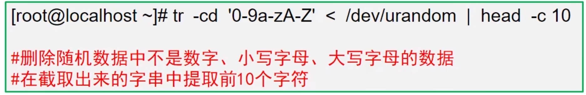
13.综合案例 13.1 进度条
progress.sh
1 2 3 4 5 6 7 8 9 10 11 12 #!/bin/bash bar while : do echo -en "\033[42m \033[0m" sleep 0.5 done } bar & cp -r $1 $2 kill $!echo
1 2 3 [root@localhost ~] [root@localhost ~] [root@localhost ~]
13.2 菜单选择
menu.sh
1 2 3 4 5 6 7 8 9 10 11 12 13 14 15 16 17 18 19 20 21 22 23 24 25 26 27 28 29 30 31 32 33 34 35 #!/bin/bash clear echo -e "\033[42m--------------------------------------\033[0m" echo -e "#\e[32m 1.查看网卡信息\e[0m #" echo -e "#\e[33m 2.查看内存信息\e[0m #" echo -e "#\e[34m 3.查看磁盘信息\e[0m #" echo -e "#\e[35m 4.查看CPU信息\e[0m #" echo -e "#\e[36m 5.查看账户信息\e[0m #" echo -e "\033[42m--------------------------------------\033[0m" echo read -p "请输入选择1-5:" keycase $key in 1) ifconfig | head -2;; 2) mem=$(free | grep Mem | tr -s " " | cut -d " " -f7) echo "本机剩余内存容量为:${mem} K." ;; 3) root_free=$(df | grep /$ | tr -s " " | cut -d " " -f4) echo "本机磁盘剩余容量为:${root_free} K." ;; 4) cpu=$(uptime | tr -s " " | cut -d " " -f11) echo "本机CPU 15分钟的平均负载为:$cpu ." ;; 5) login_number=$(who | wc -l) total_number=$(cat /etc/passwd | wc -l) echo "当前系统账户为:$USER ." echo "当前系统登陆的账户数量为:$login_number ." echo "当前系统中一共有用户数量为:$total_number ." ;; *) echo "输入有误，超出1-5的范围." ;; esac
13.3 fork炸弹
14.正则表达式 14.1 什么是正则表达式
描述一个字符集合的表达方式
模糊匹配
Regular Expression
14.2 基本正则符号
包含某一个部分 ^以什么开头
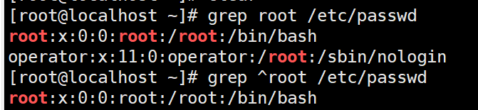
以什么结尾$ [abc]
[^abc]
.所有
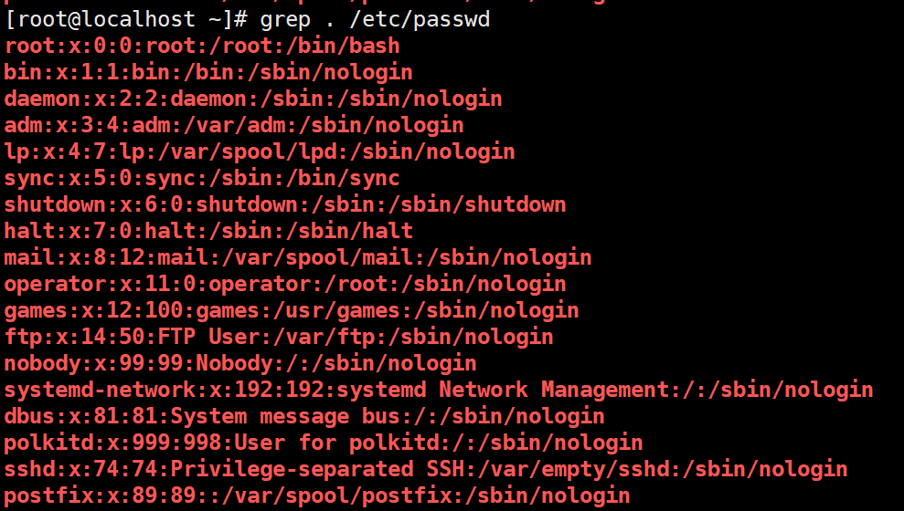
r.*t 包含以r开始，以t结尾的一部分
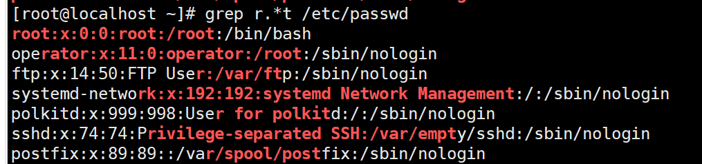
[0-9]
[0-9]*
[0-9]\{m,n\} [0-9]\{m\}
14.3 扩展正则符号
注意：grep命令默认不支持扩展正则，需要在后面加 -E
14.4 Perl兼容的正则 注意：grep命令默认不支持Perl兼容的正则，需要在后面加 -P
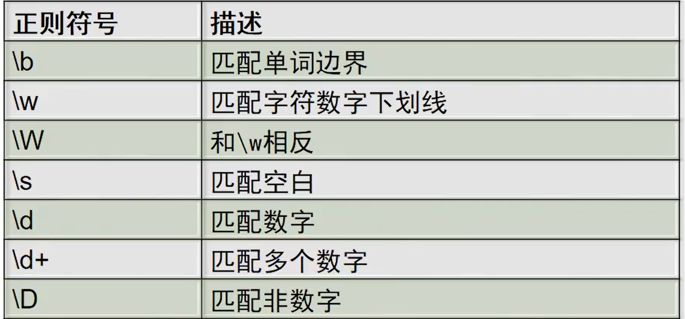
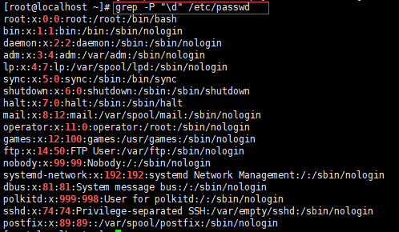
14.5 grep语法
用法：grep [选项] 匹配模式 [文件]…
常用选项：
-i
忽略大小写
-v
取反匹配
-w
匹配单词
-q
静默匹配，不将结果显示在屏幕
15.sed 15.1 什么是sed
15.2 语法格式
语法
sed [选项] ‘[定位符]指令’ 文件名
命令 | sed [选项] ‘[定位符]指令’
1 2 3 4 5 6 7 8 9 10 11 12 13 14 15 [root@localhost ~] 127.0.0.1 localhost localhost.localdomain localhost4 localhost4.localdomain4 ::1 localhost localhost.localdomain localhost6 localhost6.localdomain6 ::1 localhost localhost.localdomain localhost6 localhost6.localdomain6 [root@localhost ~] ::1 localhost localhost.localdomain localhost6 localhost6.localdomain6 [root@localhost ~] 127.0.0.1 localhost localhost.localdomain localhost4 localhost4.localdomain4 ::1 localhost localhost.localdomain localhost6 localhost6.localdomain6 [root@localhost ~] daemon:x:2:2:daemon:/sbin:/sbin/nologin [root@localhost ~] root:x:0:0:root:/root:/bin/bash bin:x:1:1:bin:/bin:/sbin/nologin daemon:x:2:2:daemon:/sbin:/sbin/nologin
-n
屏蔽默认输出
-i
直接修改源文件
-r
支持扩展正则
15.3 数据定位 15.3.1 行号定位
15.3.2 正则定位
sed可以使用正则匹配需要的数据，然后再编辑对应的内容
/正则表达式/
1 2 3 4 5 6 7 8 9 10 11 12 13 [root@localhost ~] root:x:0:0:root:/root:/bin/bash [root@localhost ~] mail:x:8:12:mail:/var/spool/mail:/sbin/nologin operator:x:11:0:operator:/root:/sbin/nologin games:x:12:100:games:/usr/games:/sbin/nologin ftp:x:14:50:FTP User:/var/ftp:/sbin/nologin nobody:x:99:99:Nobody:/:/sbin/nologin systemd-network:x:192:192:systemd Network Management:/:/sbin/nologin dbus:x:81:81:System message bus:/:/sbin/nologin polkitd:x:999:998:User for polkitd:/:/sbin/nologin sshd:x:74:74:Privilege-separated SSH:/var/empty/sshd:/sbin/nologin postfix:x:89:89::/var/spool/postfix:/sbin/nologin
15.4 常用sed指令
指令
作用
p(print)
打印行
d(delete)
删除行
c(replace)
替换行
s(substitution)
替换关键词
=
打印行号
Print指令
1 2 3 4 5 6 7 8 9 10 11 12 13 14 15 16 17 18 19 20 21 22 23 24 25 26 27 28 29 30 31 32 33 34 35 36 37 38 39 40 41 42 43 44 45 46 47 48 49 50 51 52 53 54 55 56 57 58 59 60 61 62 [root@localhost ~] IPADDR="192.168.1.25" [root@localhost ~] TYPE="Ethernet" PROXY_METHOD="none" BROWSER_ONLY="dhcp" BOOTPROTO="static" DEFROUTE="yes" IPV4_FAILURE_FATAL="no" IPV6INIT="yes" IPV6_AUTOCONF="yes" IPV6_DEFROUTE="yes" IPV6_FAILURE_FATAL="no" IPV6_ADDR_GEN_MODE="stable-privacy" NAME="ens33" UUID="25297bb4-b1e8-48a9-9a0a-6fc8e840bc6e" DEVICE="ens33" ONBOOT="yes" IPADDR="192.168.1.25" GATEWAY="192.168.1.1" [root@localhost ~] total used free shared buff/cache available Mem: 1863004 227420 1484488 9724 151096 1483072 Swap: 2097148 0 2097148 [root@localhost ~] Mem: 1863004 227644 1484244 9724 151116 1482848 [root@localhost ~] 文件系统 容量 已用 可用 已用% 挂载点 devtmpfs 898M 0 898M 0% /dev tmpfs 910M 0 910M 0% /dev/shm tmpfs 910M 9.5M 901M 2% /run tmpfs 910M 0 910M 0% /sys/fs/cgroup /dev/mapper/centos-root 27G 1.6G 26G 6% / /dev/sda1 1014M 151M 864M 15% /boot tmpfs 182M 0 182M 0% /run/user/0 [root@localhost ~] /dev/mapper/centos-root 27G 1.6G 26G 6% / [root@localhost ~] root:x:0:0:root:/root:/bin/bash daemon:x:2:2:daemon:/sbin:/sbin/nologin sync :x:5:0:sync :/sbin:/bin/sync[root@localhost ~] root:x:0:0:root:/root:/bin/bash daemon:x:2:2:daemon:/sbin:/sbin/nologin adm:x:3:4:adm:/var/adm:/sbin/nologin lp:x:4:7:lp:/var/spool/lpd:/sbin/nologin sync :x:5:0:sync :/sbin:/bin/syncshutdown:x:6:0:shutdown:/sbin:/sbin/shutdown halt:x:7:0:halt:/sbin:/sbin/halt mail:x:8:12:mail:/var/spool/mail:/sbin/nologin operator:x:11:0:operator:/root:/sbin/nologin games:x:12:100:games:/usr/games:/sbin/nologin ftp:x:14:50:FTP User:/var/ftp:/sbin/nologin nobody:x:99:99:Nobody:/:/sbin/nologin systemd-network:x:192:192:systemd Network Management:/:/sbin/nologin dbus:x:81:81:System message bus:/:/sbin/nologin polkitd:x:999:998:User for polkitd:/:/sbin/nologin sshd:x:74:74:Privilege-separated SSH:/var/empty/sshd:/sbin/nologin postfix:x:89:89::/var/spool/postfix:/sbin/nologin [root@localhost ~] bin:x:1:1:bin:/bin:/sbin/nologin
Delete指令（不使用-i选项，源文件不会被修改）
Replace指令（不使用-i选项，源文件不会被修改）
Substitution（不使用-i选项，源文件不会被修改）
Substitution(替换符/可以用其它字换)
Substitution(正则符号（）具有保留的功能)
1 2 3 4 5 6 7 8 9 10 11 12 [root@localhost ~] dello the worlh [root@localhost ~] dhello the worl [root@localhost ~] dddh [root@localhost ~] d [root@localhost ~] ello the worl [root@localhost ~] h
=
1 2 3 4 5 6 7 8 9 10 11 12 13 14 15 16 17 18 19 20 21 22 23 24 25 26 27 28 29 30 31 32 [root@localhost ~] 1 [root@localhost ~] 8 [root@localhost ~] 1 10 [root@localhost ~] 1 [root@localhost ~] 1 2 3 4 5 6 7 8 9 10 11 12 13 14 15 16 17 18 [root@localhost ~] 18 [root@localhost ~] 18 /etc/passwd
15.5 文本块指令 15.5.1 常用指令
指令
作用
i(insert)
插入
a(append)
追加
r(read)
读取文件|导入文件内容
w(write)
文件另存为|导出文件内容
15.5.2 插入指令
1 2 3 4 5 6 7 8 9 10 11 12 13 14 15 16 17 18 19 20 21 22 23 24 25 26 27 28 29 30 31 32 33 34 35 36 37 [root@localhost ~] 2046 2048 2046 2046 1001 2046 2999 1888 2046 2046 2046 2046 [root@localhost ~] 2046 2048 2046 2046 ABC_XYZ 1001 2046 2999 1888 2046 2046 2046 2046 [root@localhost ~] 2046 2048 2046 2046 1001 2046 2999 1888 2046 2046 2046 2046 [root@localhost ~] [root@localhost ~] 2046 2048 2046 2046 1001 2046 2999 1888 ABC_XYZ 2046 2046 2046 2046 [root@localhost ~] ABC XYZ 2046 2048 2046 2046 ABC XYZ 1001 2046 2999 1888 ABC_XYZ ABC XYZ 2046 2046 2046 2046 [root@localhost ~] 2046 2048 2046 2046 ABC XYZ 1001 2046 2999 1888 ABC_XYZ 2046 2046 2046 2046
15.5.3 追加指令
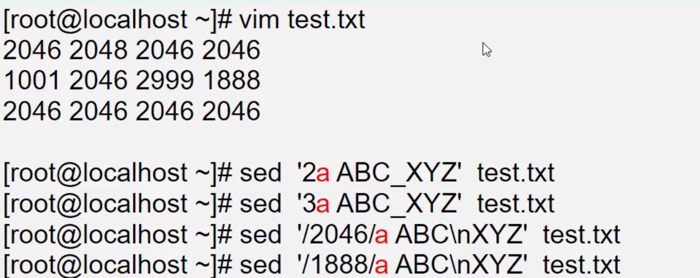
15.5.4 导入指令
15.5.5 导出指令
15.6 综合案例 15.6.1 点名器
1 2 3 4 5 6 7 [root@localhost ~] [root@localhost ~] 李白 杜甫 白居易 孟浩然 苏轼
roll.sh
1 2 3 4 5 6 7 8 9 10 11 12 13 14 15 16 #!/bin/bash name_file="name.txt" line_file=$(sed -n '$=' $name_file ) while :do clear tmp=$(sed -n "$[RANDOM%line_file+1]p" $name_file ) echo -e "\033[32m 随机点名器（按Ctrl+C停止）：\033[0m" echo -e "\033[32m#############################\033[0m" echo -e "\033[32m# #\033[0m" echo -e "\033[32m $tmp \033[0m" echo -e "\033[32m# #\033[0m" echo -e "\033[32m#############################\033[0m" sleep 0.1 done
15.6.2 抓取某个网站首页的所有图片
grasppig.sh
1 2 3 4 5 6 7 8 9 10 11 12 13 14 15 16 17 18 19 20 21 22 23 24 25 26 27 28 29 30 31 32 33 34 35 36 37 38 39 #!/bin/bash URL="/root/shell/day04/spider_$$.txt" echo -e "\033[32m正在获取网页源码，请稍后...\033[0m" curl -s https://xiaguyangdie.github.io/2022/09/27/%E7%BD%91%E7%BB%9C%E5%AE%89%E5%85%A8%E4%B9%8B%E7%8E%AF%E5%A2%83%E6%90%AD%E5%BB%BA/ > $URL echo -e "\033[32m正在获取种子URL，请稍后...\033[0m" sed -i '/<img/!d' $URL sed -i 's/.*src="/https:\/\/xiaguyangdie.github.io/' $URL sed -i 's/".*//' $URL sed -i 's/<img class=//' $URL echo if ! rpm -q wget &> /dev/nullthen yum -y install wget fi echo -e "\033[32m正在批量下载种子数据，请稍后...\033[0m" for i in $(cat $URL )do wget -P /root/shell/day04/下载图片/ -q $i done echo -e "\033[33m下载完成\033[0m" rm -rf $URL
15.7 总结
16.awk 16.1 概述
awk编程语言/数据处理引擎
创造者：Aho、Weinberger、Kernighan
基于模式匹配检查输入文本，逐行处理并输出
通常用在Shell脚本中，获取指定的数据
单独使用时，可以对文本数据做统计
语法格式
格式1：前置命令 | awk [选项] ‘[条件]{指令}’
格式2：awk [选项] ‘[条件]{指令}’ 文件.. ..
1 2 3 4 5 6 7 8 9 10 11 12 [root@localhost ~] hello the world welcome to Beijing [root@localhost ~] hello world welcome Beijing [root@localhost ~] hello the world welcome to Beijing [root@localhost ~] world hello Beijing welcome
常见选项：-F可以指定分隔符，默认分隔符为（空格或Tab键）
1 2 3 4 5 6 7 8 9 10 11 12 13 14 15 16 17 18 19 20 21 22 23 24 25 26 27 28 29 30 31 32 33 34 35 36 37 38 [root@localhost ~] root 0 bin 1 daemon 2 adm 3 lp 4 sync 5shutdown 6 halt 7 mail 8 operator 11 games 12 ftp 14 nobody 99 systemd-network 192 dbus 81 polkitd 999 sshd 74 postfix 89 [root@localhost ~] root:x:0:0:root:/root:/bin/bash bin:x:1:1:bin:/bin:/sbin/nologin daemon:x:2:2:daemon:/sbin:/sbin/nologin adm:x:3:4:adm:/var/adm:/sbin/nologin lp:x:4:7:lp:/var/spool/lpd:/sbin/nologin sync :x:5:0:sync :/sbin:/bin/sync shutdown:x:6:0:shutdown:/sbin:/sbin/shutdown halt:x:7:0:halt:/sbin:/sbin/halt mail:x:8:12:mail:/var/spool/mail:/sbin/nologin operator:x:11:0:operator:/root:/sbin/nologin games:x:12:100:games:/usr/games:/sbin/nologin ftp:x:14:50:FTP nobody:x:99:99:Nobody:/:/sbin/nologin systemd-network:x:192:192:systemd Management:/:/sbin/nologin dbus:x:81:81:System bus:/:/sbin/nologin polkitd:x:999:998:User polkitd:/:/sbin/nologin sshd:x:74:74:Privilege-separated postfix:x:89:89::/var/spool/postfix:/sbin/nologin
1 2 3 4 5 6 7 8 [root@localhost ~] 7 7 7 [root@localhost ~] 1 2 3
1 2 3 4 5 6 7 8 9 10 11 12 13 14 15 16 17 18 19 20 21 22 23 24 25 26 27 28 29 30 31 32 33 34 35 36 37 38 [root@localhost ~] /bin/bash /sbin/nologin /sbin/nologin /sbin/nologin /sbin/nologin /bin/sync /sbin/shutdown /sbin/halt /sbin/nologin /sbin/nologin /sbin/nologin /sbin/nologin /sbin/nologin /sbin/nologin /sbin/nologin /sbin/nologin /sbin/nologin /sbin/nologin [root@localhost ~] 用户名:root UID:0 用户名:bin UID:1 用户名:daemon UID:2 用户名:adm UID:3 用户名:lp UID:4 用户名:sync UID:5 用户名:shutdown UID:6 用户名:halt UID:7 用户名:mail UID:8 用户名:operator UID:11 用户名:games UID:12 用户名:ftp UID:14 用户名:nobody UID:99 用户名:systemd-network UID:192 用户名:dbus UID:81 用户名:polkitd UID:999 用户名:sshd UID:74 用户名:postfix UID:89
1 2 3 4 5 6 7 8 9 10 11 12 13 14 15 16 17 [root@localhost ~] 100 [root@localhost ~] 100 [root@localhost ~] 2304 [root@localhost ~] 0.5625 [root@localhost ~] 1 [root@localhost ~] 0 18 [root@localhost ~] 1 [root@localhost ~] 1
16.2 基本案例 16.2.1 过滤内存信息 1 2 3 4 5 6 7 8 9 10 11 12 13 14 15 16 17 18 19 20 21 22 23 24 25 26 27 28 29 30 31 32 33 34 35 [root@localhost ~] total used free shared buff/cache available Mem: 1863004 234940 1329084 9756 298980 1458928 Swap: 2097148 0 2097148 [root@localhost ~] 1458656 [root@localhost ~] 6 7 4 [root@localhost ~] available 1458656 2097148 [root@localhost ~] Mem: 1863004 235208 1328812 9756 298984 1458660 [root@localhost ~] 1458676 [root@localhost ~] 1458676 [root@localhost ~] 文件系统 1K-块 已用 可用 已用% 挂载点 devtmpfs 919440 0 919440 0% /dev tmpfs 931500 0 931500 0% /dev/shm tmpfs 931500 9756 921744 2% /run tmpfs 931500 0 931500 0% /sys/fs/cgroup /dev/mapper/centos-root 28289540 1585972 26703568 6% / /dev/sda1 1038336 153872 884464 15% /boot tmpfs 186304 0 186304 0% /run/user/0 [root@localhost ~] 26703568 [root@localhost ~] /dev/mapper/centos-root 28289540 1585972 26703568 6% /
16.2.2 过滤CPU信息 1 2 3 4 5 6 7 8 9 10 11 12 13 14 15 16 17 18 19 20 21 22 23 24 25 26 27 28 29 30 31 32 33 34 35 [root@localhost ~] Architecture: x86_64 CPU op-mode(s): 32-bit, 64-bit Byte Order: Little Endian CPU(s): 1 On-line CPU(s) list: 0 Thread(s) per core: 1 Core(s) per socket: 1 Socket(s): 1 NUMA node(s): 1 Vendor ID: GenuineIntel CPU family: 6 Model: 78 Model name: Intel(R) Core(TM) i5-6200U CPU @ 2.30GHz Stepping: 3 CPU MHz: 2399.999 BogoMIPS: 4799.99 Hypervisor vendor: VMware Virtualization type : full L1d cache: 32K L1i cache: 32K L2 cache: 256K L3 cache: 3072K NUMA node0 CPU(s): 0 Flags: fpu vme de pse tsc msr pae mce cx8 apic sep mtrr pge mca cmov pat pse36 clflush mmx fxsr sse sse2 ss syscall nx pdpe1gb rdtscp lm constant_tsc arch_perfmon nopl xtopology tsc_reliable nonstop_tsc eagerfpu pni pclmulqdq ssse3 fma cx16 pcid sse4_1 sse4_2 x2apic movbe popcnt tsc_deadline_timer aes xsave avx f16c rdrand hypervisor lahf_lm abm 3dnowprefetch invpcid_single ssbd ibrs ibpb stibp fsgsbase tsc_adjust bmi1 avx2 smep bmi2 invpcid rdseed adx smap clflushopt xsaveopt xsavec xgetbv1 arat md_clear spec_ctrl intel_stibp flush_l1d arch_capabilities [root@localhost ~] Intel(R) Core(TM) i5-6200U CPU @ 2.30GHz [root@localhost ~] Intel(R) Core(TM) i5-6200U CPU @ 2.30GHz [root@localhost ~] 1 [root@localhost ~] 23:01:58 up 10:03, 2 users , load average: 0.00, 0.01, 0.05 [root@localhost ~] 0.05
16.2.3 过滤网卡信息 1 2 3 4 5 6 7 8 9 10 11 12 13 14 [root@localhost ~] ens33: flags=4163<UP,BROADCAST,RUNNING,MULTICAST> mtu 1500 inet 192.168.1.25 netmask 255.255.255.0 broadcast 192.168.1.255 inet6 fe80::f52a:6ec0:134d:1f2e prefixlen 64 scopeid 0x20<link > ether 00:0c:29:9f:78:8e txqueuelen 1000 (Ethernet) RX packets 20098 bytes 6728180 (6.4 MiB) RX errors 0 dropped 0 overruns 0 frame 0 TX packets 14100 bytes 3412182 (3.2 MiB) TX errors 0 dropped 0 overruns 0 carrier 0 collisions 0 [root@localhost ~] 进站流量为:6737774字节 [root@localhost ~] 出站流量为:3423066字节
16.2.4 监控暴力破解的IP地址 1 2 3 4 5 6 7 8 9 10 11 12 13 14 15 16 17 18 [root@localhost ~] [root@localhost ~] The authenticity of host '192.168.1.25 (192.168.1.25)' can't be established. ECDSA key fingerprint is SHA256:WyzcmUkCb1ERgx03IxblQQnTewpz0HbMXrNczyNEBms. ECDSA key fingerprint is MD5:9e:d9:42:d2:7f:7f:dc:19:2f:a1:08:17:69:16:58:87. Are you sure you want to continue connecting (yes/no)? yes Warning: Permanently added ' 192.168.1.25' (ECDSA) to the list of known hosts. root@192.168.1.25' s password: Permission denied, please try again. root@192.168.1.25's password: [root@localhost ~]# vim /var/log/secure [root@localhost ~]# grep "Failed" /var/log/secure Oct 1 23:10:38 localhost sshd[44717]: Failed password for root from 192.168.1.25 port 34560 ssh2 [root@localhost ~]# grep "Failed" /var/log/secure | awk ' {print $11 }' 192.168.1.25 [root@localhost ~]# awk ' /Failed/{print $11 }' /var/log/secure 192.168.1.25
16.3 条件判断
输出所有行还是输出部分行?
如何限制仅输出部分行的数据内容？
如何设置多个条件？
awk [选项] ‘[条件]{指令}’ 文件
条件：
正则表达式
1 2 3 4 5 6 7 8 9 10 11 12 13 14 15 16 17 18 19 20 21 22 23 24 25 26 27 28 29 30 31 32 33 34 35 36 37 38 39 40 41 42 43 44 45 [root@localhost ~] root:x:0:0:root:/root:/bin/bash [root@localhost ~] bin /sbin/nologin daemon /sbin/nologin adm /sbin/nologin lp /sbin/nologin sync /bin/syncshutdown /sbin/shutdown halt /sbin/halt mail /sbin/nologin operator /sbin/nologin games /sbin/nologin ftp /sbin/nologin nobody /sbin/nologin systemd-network /sbin/nologin dbus /sbin/nologin polkitd /sbin/nologin sshd /sbin/nologin postfix /sbin/nologin rpc /sbin/nologin gluster /sbin/nologin libstoragemgmt /sbin/nologin qemu /sbin/nologin chrony /sbin/nologin unbound /sbin/nologin saslauth /sbin/nologin radvd /sbin/nologin rtkit /sbin/nologin ntp /sbin/nologin tss /sbin/nologin usbmuxd /sbin/nologin pulse /sbin/nologin setroubleshoot /sbin/nologin colord /sbin/nologin abrt /sbin/nologin geoclue /sbin/nologin saned /sbin/nologin sssd /sbin/nologin rpcuser /sbin/nologin nfsnobody /sbin/nologin gdm /sbin/nologin gnome-initial-setup /sbin/nologin tcpdump /sbin/nologin avahi /sbin/nologin
数值/字符比较
1 2 3 == 等于、!= 不等于 > 大于、>= 大于等于 < 小于、<= 小于等于
1 2 3 4 5 6 7 8 9 10 11 12 13 14 15 16 17 18 19 20 21 22 23 24 25 26 27 28 29 30 31 32 33 34 35 36 37 38 39 40 41 42 43 44 45 46 47 48 49 [root@localhost ~] bin:x:1:1:bin:/bin:/sbin/nologin [root@localhost ~] bin:x:1:1:bin:/bin:/sbin/nologin [root@localhost ~] bin:x:1:1:bin:/bin:/sbin/nologin daemon:x:2:2:daemon:/sbin:/sbin/nologin adm:x:3:4:adm:/var/adm:/sbin/nologin lp:x:4:7:lp:/var/spool/lpd:/sbin/nologin sync :x:5:0:sync :/sbin:/bin/syncshutdown:x:6:0:shutdown:/sbin:/sbin/shutdown halt:x:7:0:halt:/sbin:/sbin/halt mail:x:8:12:mail:/var/spool/mail:/sbin/nologin operator:x:11:0:operator:/root:/sbin/nologin games:x:12:100:games:/usr/games:/sbin/nologin ftp:x:14:50:FTP User:/var/ftp:/sbin/nologin nobody:x:99:99:Nobody:/:/sbin/nologin systemd-network:x:192:192:systemd Network Management:/:/sbin/nologin dbus:x:81:81:System message bus:/:/sbin/nologin polkitd:x:999:998:User for polkitd:/:/sbin/nologin sshd:x:74:74:Privilege-separated SSH:/var/empty/sshd:/sbin/nologin postfix:x:89:89::/var/spool/postfix:/sbin/nologin rpc:x:32:32:Rpcbind Daemon:/var/lib/rpcbind:/sbin/nologin gluster:x:998:994:GlusterFS daemons:/run/gluster:/sbin/nologin libstoragemgmt:x:997:993:daemon account for libstoragemgmt:/var/run/lsm:/sbin/nologin qemu:x:107:107:qemu user:/:/sbin/nologin chrony:x:996:992::/var/lib/chrony:/sbin/nologin unbound:x:995:991:Unbound DNS resolver:/etc/unbound:/sbin/nologin saslauth:x:994:76:Saslauthd user:/run/saslauthd:/sbin/nologin radvd:x:75:75:radvd user:/:/sbin/nologin rtkit:x:172:172:RealtimeKit:/proc:/sbin/nologin ntp:x:38:38::/etc/ntp:/sbin/nologin tss:x:59:59:Account used by the trousers package to sandbox the tcsd daemon:/dev/null:/sbin/nologin usbmuxd:x:113:113:usbmuxd user:/:/sbin/nologin pulse:x:171:171:PulseAudio System Daemon:/var/run/pulse:/sbin/nologin setroubleshoot:x:993:987::/var/lib/setroubleshoot:/sbin/nologin colord:x:992:986:User for colord:/var/lib/colord:/sbin/nologin abrt:x:173:173::/etc/abrt:/sbin/nologin geoclue:x:991:985:User for geoclue:/var/lib/geoclue:/sbin/nologin saned:x:990:984:SANE scanner daemon user:/usr/share/sane:/sbin/nologin sssd:x:989:983:User for sssd:/:/sbin/nologin rpcuser:x:29:29:RPC Service User:/var/lib/nfs:/sbin/nologin nfsnobody:x:65534:65534:Anonymous NFS User:/var/lib/nfs:/sbin/nologin gdm:x:42:42::/var/lib/gdm:/sbin/nologin gnome-initial-setup:x:988:982::/run/gnome-initial-setup/:/sbin/nologin tcpdump:x:72:72::/:/sbin/nologin avahi:x:70:70:Avahi mDNS/DNS-SD Stack:/var/run/avahi-daemon:/sbin/nologin [root@localhost ~] nfsnobody
逻辑比较
1 2 &&逻辑与：期望多个条件都成立 ||逻辑或：只要有一个条件处理即满足要求
1 2 3 4 5 6 [root@localhost ~] root 0 bin 1 [root@localhost ~] bin 1 halt 7
运算符
1 2 +、-、*、/、% ++、--、+=、-=、*=、/=
1 2 3 4 5 6 7 8 9 10 11 12 13 14 15 16 17 18 19 20 21 22 23 24 25 [root@localhost ~] root:x:0:0:root:/root:/bin/bash daemon:x:2:2:daemon:/sbin:/sbin/nologin lp:x:4:7:lp:/var/spool/lpd:/sbin/nologin shutdown:x:6:0:shutdown:/sbin:/sbin/shutdown mail:x:8:12:mail:/var/spool/mail:/sbin/nologin games:x:12:100:games:/usr/games:/sbin/nologin nobody:x:99:99:Nobody:/:/sbin/nologin dbus:x:81:81:System message bus:/:/sbin/nologin sshd:x:74:74:Privilege-separated SSH:/var/empty/sshd:/sbin/nologin rpc:x:32:32:Rpcbind Daemon:/var/lib/rpcbind:/sbin/nologin libstoragemgmt:x:997:993:daemon account for libstoragemgmt:/var/run/lsm:/sbin/nologin chrony:x:996:992::/var/lib/chrony:/sbin/nologin saslauth:x:994:76:Saslauthd user:/run/saslauthd:/sbin/nologin rtkit:x:172:172:RealtimeKit:/proc:/sbin/nologin tss:x:59:59:Account used by the trousers package to sandbox the tcsd daemon:/dev/null:/sbin/nologin pulse:x:171:171:PulseAudio System Daemon:/var/run/pulse:/sbin/nologin colord:x:992:986:User for colord:/var/lib/colord:/sbin/nologin geoclue:x:991:985:User for geoclue:/var/lib/geoclue:/sbin/nologin sssd:x:989:983:User for sssd:/:/sbin/nologin nfsnobody:x:65534:65534:Anonymous NFS User:/var/lib/nfs:/sbin/nologin gnome-initial-setup:x:988:982::/run/gnome-initial-setup/:/sbin/nologin avahi:x:70:70:Avahi mDNS/DNS-SD Stack:/var/run/avahi-daemon:/sbin/nologin [root@localhost ~] 5
16.4 流程控制 16.4.1 if判断
单分支if判断
1 2 3 4 5 6 7 8 [root@localhost ~] 1 [root@localhost ~] root 0 [root@localhost ~] 13:51:02 up 45 min, 2 users , load average: 0.00, 0.01, 0.05 [root@localhost ~] CPUload:0.05
双分支if判断
1 2 3 4 5 6 7 8 9 10 11 12 13 14 15 16 17 18 19 20 21 22 23 24 25 26 27 28 29 30 31 32 33 34 35 36 37 38 39 40 41 42 43 44 45 46 47 48 49 50 51 52 53 54 55 56 57 58 59 60 61 62 63 64 65 66 67 68 69 70 71 72 73 74 75 76 77 78 79 80 81 82 83 84 85 86 87 88 89 90 91 92 93 94 95 96 97 98 99 100 101 102 103 104 105 106 107 108 109 110 111 112 113 114 115 116 117 118 119 120 121 122 123 124 125 126 127 128 129 130 131 132 133 134 135 136 137 138 139 140 141 142 143 144 145 146 147 148 149 150 151 152 153 154 155 156 157 158 159 160 161 162 163 164 165 166 167 168 169 170 171 172 173 174 175 176 177 178 179 180 181 182 183 184 185 186 187 188 189 190 191 192 193 194 195 196 197 198 199 200 201 202 203 204 205 206 207 208 209 210 211 212 213 214 215 216 217 218 219 220 221 222 223 224 225 226 227 228 229 230 231 232 233 234 235 236 237 238 239 240 241 242 243 244 245 246 247 248 249 250 251 252 253 254 255 256 257 258 259 260 261 262 263 264 265 266 267 268 269 270 271 272 273 274 275 276 277 278 279 280 281 282 283 284 285 286 287 288 289 290 291 292 293 294 295 296 297 298 299 300 301 302 303 304 305 306 307 308 309 310 311 [root@localhost ~] 普通用户:1 系统用户:42 [root@localhost ~] 总用量 12 -rw-------. 1 root root 1243 9月 28 15:46 anaconda-ks.cfg drwxr-xr-x. 2 root root 6 10月 2 09:11 Desktop drwxr-xr-x. 2 root root 6 10月 2 09:11 Documents drwxr-xr-x. 2 root root 6 10月 2 09:11 Downloads drwxr-xr-x. 2 root root 6 10月 2 09:11 Music -rw-r--r--. 1 root root 41 10月 1 18:46 name.txt drwxr-xr-x. 2 root root 6 10月 2 09:11 Pictures drwxr-xr-x. 2 root root 6 10月 2 09:11 Public drwxr-xr-x. 6 root root 58 10月 1 18:31 shell drwxr-xr-x. 2 root root 6 10月 2 09:11 Templates -rw-r--r--. 1 root root 35 10月 1 21:22 test.txt drwxr-xr-x. 2 root root 6 10月 2 09:11 Videos [root@localhost ~] 总用量 1416 drwxr-xr-x. 3 root root 101 10月 2 09:03 abrt -rw-r--r--. 1 root root 16 9月 28 15:44 adjtime -rw-r--r--. 1 root root 1529 4月 1 2020 aliases -rw-r--r--. 1 root root 12288 9月 28 15:48 aliases.db drwxr-xr-x. 3 root root 65 10月 2 09:06 alsa drwxr-xr-x. 2 root root 4096 10月 2 09:07 alternatives -rw-------. 1 root root 541 8月 9 2019 anacrontab -rw-r--r--. 1 root root 55 8月 8 2019 asound.conf -rw-r--r--. 1 root root 1 5月 18 23:54 at.deny drwxr-x---. 3 root root 43 9月 28 15:40 audisp drwxr-x---. 3 root root 83 9月 28 15:47 audit -rw-r--r--. 1 root root 15137 12月 16 2020 autofs.conf -rw-------. 1 root root 232 12月 16 2020 autofs_ldap_auth.conf -rw-r--r--. 1 root root 795 12月 16 2020 auto.master drwxr-xr-x. 2 root root 6 12月 16 2020 auto.master.d -rw-r--r--. 1 root root 524 12月 16 2020 auto.misc -rwxr-xr-x. 1 root root 1260 12月 16 2020 auto.net -rwxr-xr-x. 1 root root 687 12月 16 2020 auto.smb drwxr-xr-x. 4 root root 71 10月 2 09:06 avahi drwxr-xr-x. 2 root root 4096 10月 2 09:06 bash_completion.d -rw-r--r--. 1 root root 2853 4月 1 2020 bashrc drwxr-xr-x. 2 root root 26 9月 1 22:57 binfmt.d drwxr-xr-x. 2 root root 23 10月 2 09:01 bluetooth drwxr-xr-x. 2 root root 12288 10月 2 09:02 brltty -rw-r--r--. 1 root root 21929 4月 11 2018 brltty.conf -rw-r--r--. 1 root root 37 10月 23 2020 centos-release -rw-r--r--. 1 root root 51 10月 23 2020 centos-release-upstream drwxr-xr-x. 2 root root 29 10月 2 09:02 certmonger -rw-r--r--. 1 root root 676 8月 9 2019 cgconfig.conf drwxr-xr-x. 2 root root 6 8月 9 2019 cgconfig.d -rw-r--r--. 1 root root 265 10月 2 09:06 cgrules.conf -rw-r--r--. 1 root root 131 8月 9 2019 cgsnapshot_blacklist.conf drwxr-xr-x. 2 root root 6 10月 13 2020 chkconfig.d -rw-r--r--. 1 root root 1108 8月 8 2019 chrony.conf -rw-r-----. 1 root chrony 481 8月 8 2019 chrony.keys drwxr-xr-x. 2 root root 26 10月 2 09:06 cifs-utils drwxr-xr-x. 2 root root 54 10月 2 09:06 cron.d drwxr-xr-x. 2 root root 57 10月 2 09:06 cron.daily -rw-------. 1 root root 0 8月 9 2019 cron.deny drwxr-xr-x. 2 root root 22 6月 10 2014 cron.hourly drwxr-xr-x. 2 root root 6 6月 10 2014 cron.monthly -rw-r--r--. 1 root root 451 6月 10 2014 crontab drwxr-xr-x. 2 root root 6 6月 10 2014 cron.weekly -rw-------. 1 root root 0 9月 28 15:38 crypttab -rw-r--r--. 1 root root 1620 4月 1 2020 csh.cshrc -rw-r--r--. 1 root root 1103 4月 1 2020 csh.login drwxr-xr-x. 5 root lp 4096 10月 2 10:12 cups drwxr-xr-x. 2 root root 34 10月 2 09:03 cupshelpers drwxr-xr-x. 4 root root 78 9月 28 15:40 dbus-1 drwxr-xr-x. 4 root root 31 10月 2 09:01 dconf drwxr-xr-x. 2 root root 44 9月 28 15:44 default drwxr-xr-x. 2 root root 40 10月 2 09:04 depmod.d drwxr-x---. 4 root root 53 9月 28 15:40 dhcp -rw-r--r--. 1 root root 5090 8月 6 2019 DIR_COLORS -rw-r--r--. 1 root root 5725 8月 6 2019 DIR_COLORS.256color -rw-r--r--. 1 root root 4669 8月 6 2019 DIR_COLORS.lightbgcolor -rw-r--r--. 1 root root 1174 4月 11 2018 dleyna-server-service.conf -rw-r--r--. 1 root root 26832 7月 21 2021 dnsmasq.conf drwxr-xr-x. 2 root root 6 7月 21 2021 dnsmasq.d -rw-r--r--. 1 root root 1285 9月 30 2020 dracut.conf drwxr-xr-x. 2 root root 34 10月 2 09:01 dracut.conf.d -rw-r--r--. 1 root root 112 9月 30 2020 e2fsck.conf drwxr-xr-x. 3 root root 37 9月 29 15:14 egl -rw-r--r--. 1 root root 4760 8月 9 2019 enscript.cfg -rw-r--r--. 1 root root 0 4月 1 2020 environment -rw-r--r--. 1 root root 1317 4月 11 2018 ethertypes -rw-r--r--. 1 root root 0 6月 7 2013 exports drwxr-xr-x. 2 root root 6 10月 14 2021 exports.d lrwxrwxrwx. 1 root root 56 9月 28 15:40 favicon.png -> /usr/share/icons/hicolor/16x16/apps/fedora-logo-icon.png drwxr-xr-x. 2 root root 22 10月 2 09:02 fcoe drwxr-xr-x. 2 root root 46 10月 2 09:02 festival -rw-r--r--. 1 root root 70 4月 1 2020 filesystems drwxr-xr-x. 3 root root 18 10月 2 09:06 firefox drwxr-x---. 7 root root 133 10月 2 09:05 firewalld drwxr-xr-x. 3 root root 23 10月 2 09:04 flatpak drwxr-xr-x. 3 root root 38 9月 29 15:14 fonts -rw-r--r--. 1 root root 20 10月 31 2018 fprintd.conf -rw-r--r--. 1 root root 465 9月 28 15:38 fstab -rw-r--r--. 1 root root 38 10月 30 2018 fuse.conf drwxr-xr-x. 3 root root 59 10月 2 09:04 fwupd drwxr-xr-x. 7 root root 107 10月 2 09:01 gconf drwxr-xr-x. 2 root root 6 8月 2 2017 gcrypt -rw-r--r--. 1 root root 265 9月 30 2020 gdbinit drwxr-xr-x. 2 root root 6 9月 30 2020 gdbinit.d drwxr-xr-x. 6 root root 107 10月 2 09:05 gdm drwxr-xr-x. 2 root root 26 10月 2 09:03 geoclue -rw-r--r--. 1 root root 1704 8月 13 2019 GeoIP.conf drwxr-xr-x. 2 root root 6 10月 1 2020 ghostscript drwxr-xr-x. 3 root root 26 9月 29 15:14 glvnd drwxr-xr-x. 2 root root 6 7月 13 2018 gnupg -rw-r--r--. 1 root root 94 3月 25 2017 GREP_COLORS drwxr-xr-x. 4 root root 40 9月 28 15:39 groff -rw-r--r--. 1 root root 960 10月 2 09:06 group -rw-r--r--. 1 root root 946 10月 2 09:06 group- lrwxrwxrwx. 1 root root 22 9月 28 15:40 grub2.cfg -> ../boot/grub2/grub.cfg drwx------. 2 root root 182 9月 28 15:40 grub.d ----------. 1 root root 772 10月 2 09:06 gshadow ----------. 1 root root 760 10月 2 09:06 gshadow- drwxr-xr-x. 3 root root 20 6月 28 23:31 gss drwxr-xr-x. 2 root root 79 10月 2 09:05 gssproxy -rw-r--r--. 1 root root 9 6月 7 2013 host.conf -rw-r--r--. 1 root root 22 9月 28 15:44 hostname -rw-r--r--. 1 root root 158 6月 7 2013 hosts -rw-r--r--. 1 root root 370 6月 7 2013 hosts.allow -rw-r--r--. 1 root root 460 6月 7 2013 hosts.deny drwxr-xr-x. 2 root root 24 10月 2 09:02 hp -rw-r--r--. 1 root root 4849 4月 11 2018 idmapd.conf lrwxrwxrwx. 1 root root 11 9月 28 15:39 init.d -> rc.d/init.d -rw-r--r--. 1 root root 511 10月 13 2020 inittab -rw-r--r--. 1 root root 942 6月 7 2013 inputrc drwxr-xr-x. 3 root root 19 10月 2 09:01 ipa drwxr-xr-x. 2 root root 159 9月 28 15:39 iproute2 -rw-r--r--. 1 root root 1073 8月 7 2020 ipsec.conf drwx------. 3 root root 22 10月 2 09:02 ipsec.d -rw-------. 1 root root 31 8月 7 2020 ipsec.secrets drwxr-xr-x. 2 root root 52 10月 2 09:01 iscsi -rw-r--r--. 1 root root 23 10月 23 2020 issue -rw-r--r--. 1 root root 22 10月 23 2020 issue.net drwxr-xr-x. 3 root root 62 10月 2 09:02 java drwxr-xr-x. 2 root root 6 11月 21 2015 jvm drwxr-xr-x. 2 root root 6 11月 21 2015 jvm-commmon -rw-r--r--. 1 root root 7274 9月 28 15:40 kdump.conf drwxr-xr-x. 3 root root 24 9月 28 15:40 kernel -rw-r--r--. 1 root root 646 1月 14 2022 krb5.conf drwxr-xr-x. 2 root root 6 6月 28 23:31 krb5.conf.d -rw-r--r--. 1 root root 1128 8月 11 01:53 kshrc -rw-r--r--. 1 root root 478 1月 8 2022 ksmtuned.conf -rw-r--r--. 1 root root 81151 10月 2 09:07 ld.so.cache -rw-r--r--. 1 root root 28 2月 28 2013 ld.so.conf drwxr-xr-x. 2 root root 161 10月 2 09:03 ld.so.conf.d -rw-r-----. 1 root root 191 3月 2 2019 libaudit.conf drwxr-xr-x. 3 root root 20 10月 2 09:01 libblockdev drwxr-xr-x. 2 root root 4096 10月 2 09:01 libibverbs.d drwxr-xr-x. 2 root root 35 9月 28 15:39 libnl drwxr-xr-x. 2 root root 6 10月 1 2020 libpaper.d drwxr-xr-x. 6 root root 187 10月 2 09:03 libreport -rw-r--r--. 1 root root 2391 10月 13 2013 libuser.conf drwx------. 5 root root 199 10月 2 09:10 libvirt -rw-r--r--. 1 root root 19 9月 28 15:44 locale.conf lrwxrwxrwx. 1 root root 35 9月 28 15:44 localtime -> ../usr/share/zoneinfo/Asia/Shanghai -rw-r--r--. 1 root root 2027 8月 6 2019 login.defs -rw-r--r--. 1 root root 662 7月 31 2013 logrotate.conf drwxr-xr-x. 2 root root 261 10月 2 09:06 logrotate.d drwxr-xr-x. 3 root root 43 10月 2 09:01 lsm drwxr-xr-x. 6 root root 100 9月 28 15:40 lvm -r--r--r--. 1 root root 33 9月 28 15:40 machine-id -rw-r--r--. 1 root root 111 10月 1 2020 magic -rw-r--r--. 1 root root 1968 4月 11 2018 mail.rc -rw-r--r--. 1 root root 5122 10月 2 2020 makedumpfile.conf.sample -rw-r--r--. 1 root root 5171 10月 31 2018 man_db.conf drwxr-xr-x. 2 root root 6 11月 21 2015 maven -rw-r--r--. 1 root root 1106 9月 30 2020 mke2fs.conf drwxr-xr-x. 2 root root 166 10月 2 09:05 modprobe.d drwxr-xr-x. 2 root root 6 9月 1 22:57 modules-load.d -rw-r--r--. 1 root root 0 6月 7 2013 motd lrwxrwxrwx. 1 root root 17 9月 28 15:38 mtab -> /proc/self/mounts -rw-r--r--. 1 root root 2620 6月 10 2014 mtools.conf drwxr-xr-x. 2 root root 6 8月 31 2021 multipath -rw-r--r--. 1 root root 570 9月 30 2020 my.cnf drwxr-xr-x. 2 root root 31 9月 28 15:40 my.cnf.d -rw-r--r--. 1 root root 8892 6月 10 2014 nanorc drwxr-xr-x. 3 root root 38 10月 2 09:01 ndctl -rw-r--r--. 1 root root 767 8月 9 2019 netconfig drwxr-xr-x. 8 root root 145 10月 2 09:06 NetworkManager -rw-r--r--. 1 root root 58 10月 13 2020 networks -rw-r--r--. 1 root root 1023 10月 14 2021 nfs.conf -rw-r--r--. 1 root root 3391 10月 14 2021 nfsmount.conf -rw-r--r--. 1 root root 1949 9月 28 15:40 nsswitch.conf -rw-r--r--. 1 root root 1938 9月 30 2020 nsswitch.conf.bak drwxr-xr-x. 3 root root 52 10月 2 09:02 ntp -rw-r--r--. 1 root root 2000 11月 28 2019 ntp.conf -rw-r--r--. 1 root root 91 12月 3 2012 numad.conf drwxr-xr-x. 2 root root 6 3月 6 2015 oddjob -rw-r--r--. 1 root root 4922 3月 6 2015 oddjobd.conf drwxr-xr-x. 2 root root 70 10月 2 09:02 oddjobd.conf.d drwxr-xr-x. 3 root root 36 9月 28 15:40 openldap drwxr-xr-x. 2 root root 6 4月 11 2018 opt lrwxrwxrwx. 1 root root 21 9月 28 15:39 os-release -> ../usr/lib/os-release drwxr-xr-x. 2 root root 92 10月 2 09:06 PackageKit drwxr-xr-x. 2 root root 4096 10月 2 09:06 pam.d -rw-r--r--. 1 root root 68 10月 1 2020 papersize -rw-r--r--. 1 root root 2261 10月 2 09:06 passwd -rw-r--r--. 1 root root 2187 10月 2 09:06 passwd- -rw-r--r--. 1 root root 1362 6月 10 2014 pbm2ppa.conf -rw-r--r--. 1 root root 2872 6月 10 2014 pinforc drwxr-xr-x. 3 root root 21 9月 28 15:39 pkcs11 drwxr-xr-x. 12 root root 151 10月 2 09:04 pki drwxr-xr-x. 2 root root 28 10月 2 09:02 plymouth drwxr-xr-x. 5 root root 52 9月 28 15:39 pm -rw-r--r--. 1 root root 6300 6月 10 2014 pnm2ppa.conf drwxr-xr-x. 5 root root 72 9月 28 15:40 polkit-1 drwxr-xr-x. 2 root root 6 6月 10 2014 popt.d drwxr-xr-x. 2 root root 154 9月 28 15:40 postfix drwxr-xr-x. 3 root root 219 10月 2 09:01 ppp drwxr-xr-x. 2 root root 105 10月 2 09:02 prelink.conf.d -rw-r--r--. 1 root root 233 6月 7 2013 printcap -rw-r--r--. 1 root root 1819 4月 1 2020 profile drwxr-xr-x. 2 root root 4096 10月 2 09:06 profile.d -rw-r--r--. 1 root root 6545 4月 1 2020 protocols drwxr-xr-x. 2 root root 79 10月 2 09:02 pulse drwxr-xr-x. 2 root root 23 10月 2 09:04 purple drwxr-xr-x. 2 root root 35 9月 28 15:39 python drwxr-xr-x. 3 root root 50 10月 2 09:06 qemu-ga drwxr-xr-x. 2 root root 51 10月 2 09:04 qemu-kvm -rw-r--r--. 1 root root 433 10月 31 2018 radvd.conf lrwxrwxrwx. 1 root root 10 9月 28 15:39 rc0.d -> rc.d/rc0.d lrwxrwxrwx. 1 root root 10 9月 28 15:39 rc1.d -> rc.d/rc1.d lrwxrwxrwx. 1 root root 10 9月 28 15:39 rc2.d -> rc.d/rc2.d lrwxrwxrwx. 1 root root 10 9月 28 15:39 rc3.d -> rc.d/rc3.d lrwxrwxrwx. 1 root root 10 9月 28 15:39 rc4.d -> rc.d/rc4.d lrwxrwxrwx. 1 root root 10 9月 28 15:39 rc5.d -> rc.d/rc5.d lrwxrwxrwx. 1 root root 10 9月 28 15:39 rc6.d -> rc.d/rc6.d drwxr-xr-x. 10 root root 127 10月 2 09:00 rc.d lrwxrwxrwx. 1 root root 13 10月 2 09:00 rc.local -> rc.d/rc.local drwxr-xr-x. 3 root root 94 10月 2 09:01 rdma lrwxrwxrwx. 1 root root 14 9月 28 15:39 redhat-release -> centos-release -rw-r--r--. 1 root root 1787 6月 10 2014 request-key.conf drwxr-xr-x. 2 root root 77 10月 2 09:06 request-key.d -rw-r--r--. 1 root root 88 9月 29 14:13 resolv.conf -rw-r--r--. 1 root root 1634 12月 25 2012 rpc drwxr-xr-x. 2 root root 128 10月 2 09:03 rpm -rw-r--r--. 1 root root 458 9月 1 22:58 rsyncd.conf -rw-r--r--. 1 root root 3232 10月 13 2020 rsyslog.conf drwxr-xr-x. 2 root root 25 10月 2 09:00 rsyslog.d -rw-r--r--. 1 root root 986 10月 13 2020 rwtab drwxr-xr-x. 2 root root 51 10月 2 09:05 rwtab.d drwxr-xr-x. 2 root root 61 10月 2 09:01 samba drwxr-xr-x. 3 root root 4096 10月 2 09:04 sane.d drwxr-xr-x. 2 root root 65 10月 2 09:02 sasl2 drwxr-xr-x. 3 root root 34 10月 2 09:06 scl -rw-------. 1 root root 221 4月 1 2020 securetty drwxr-xr-x. 6 root root 4096 9月 28 15:39 security drwxr-xr-x. 5 root root 81 9月 28 15:40 selinux -rw-r--r--. 1 root root 670293 6月 7 2013 services -rw-r--r--. 1 root root 216 4月 1 2020 sestatus.conf drwxr-xr-x. 2 root root 33 10月 2 09:03 setroubleshoot drwxr-xr-x. 2 root root 4096 10月 2 09:06 setuptool.d drwxr-xr-x. 3 root root 21 10月 2 09:01 sgml ----------. 1 root root 1137 10月 2 09:06 shadow ----------. 1 root root 1116 10月 2 09:06 shadow- -rw-r--r--. 1 root root 82 9月 29 14:57 shells drwxr-xr-x. 3 root root 92 10月 2 09:01 skel drwxr-xr-x. 3 root root 74 10月 2 09:06 smartmontools -rw-r--r--. 1 root root 138 6月 28 23:29 sos.conf drwxr-xr-x. 4 root root 56 10月 2 09:05 speech-dispatcher drwxr-xr-x. 2 root root 225 9月 28 15:47 ssh drwxr-xr-x. 2 root root 19 9月 28 15:39 ssl drwx--x--x. 3 sssd sssd 20 10月 2 09:05 sssd -rw-r--r--. 1 root root 212 10月 13 2020 statetab drwxr-xr-x. 2 root root 6 10月 13 2020 statetab.d -rw-r--r--. 1 root root 0 9月 30 21:10 subgid -rw-r--r--. 1 root root 18 9月 30 21:10 subgid- -rw-r--r--. 1 root root 0 9月 30 21:10 subuid -rw-r--r--. 1 root root 18 9月 30 21:10 subuid- -rw-r-----. 1 root root 1786 9月 30 2020 sudo.conf -r--r-----. 1 root root 4328 9月 30 2020 sudoers drwxr-x---. 2 root root 6 10月 1 2020 sudoers.d -rw-r-----. 1 root root 3181 9月 30 2020 sudo-ldap.conf drwxr-xr-x. 6 root root 4096 10月 2 09:06 sysconfig -rw-r--r--. 1 root root 449 10月 13 2020 sysctl.conf drwxr-xr-x. 2 root root 28 9月 1 22:57 sysctl.d drwxr-xr-x. 4 root root 151 10月 2 09:00 systemd lrwxrwxrwx. 1 root root 14 9月 28 15:39 system-release -> centos-release -rw-r--r--. 1 root root 23 10月 23 2020 system-release-cpe drwxr-xr-x. 4 root root 30 10月 2 09:05 target -rw-------. 1 tss tss 7046 8月 4 2017 tcsd.conf drwxr-xr-x. 2 root root 6 9月 7 2017 terminfo drwxr-xr-x. 2 root root 6 9月 1 22:57 tmpfiles.d -rw-r--r--. 1 root root 750 2月 24 2022 trusted-key.key drwxr-xr-x. 3 root root 109 9月 28 15:40 tuned drwxr-xr-x. 3 root root 54 10月 2 09:04 udev drwxr-xr-x. 2 root root 26 10月 2 09:02 udisks2 drwxr-xr-x. 2 root root 68 10月 2 09:02 unbound -rw-r--r--. 1 root root 557 4月 11 2018 updatedb.conf drwxr-xr-x. 2 root root 25 10月 2 09:02 UPower -rw-r--r--. 1 root root 1523 4月 11 2018 usb_modeswitch.conf -rw-r--r--. 1 root root 37 9月 28 15:44 vconsole.conf -rw-r--r--. 1 root root 1982 12月 16 2020 vimrc -rw-r--r--. 1 root root 1982 12月 16 2020 virc drwxr-xr-x. 4 root root 208 10月 2 09:02 vmware-tools drwxr-xr-x. 2 root root 88 9月 30 16:29 vsftpd -rw-r--r--. 1 root root 4479 5月 16 2019 wgetrc drwxr-xr-x. 2 root root 33 9月 28 15:40 wpa_supplicant -rw-r--r--. 1 root root 0 6月 10 2014 wvdial.conf drwxr-xr-x. 6 root root 103 10月 2 09:01 X11 drwxr-xr-x. 6 root root 116 10月 2 09:05 xdg drwxr-xr-x. 2 root root 6 4月 11 2018 xinetd.d drwxr-xr-x. 2 root root 21 10月 2 09:01 xml drwxr-xr-x. 6 root root 100 9月 28 15:40 yum -rw-r--r--. 1 root root 970 10月 2 2020 yum.conf drwxr-xr-x. 2 root root 220 9月 29 21:58 yum.repos.d [root@localhost ~] 普通文件个数:133 目录个数:159
多分支if判断
1 2 [root@localhost ~] 普通文件个数:133 目录个数:142 其它个数: 17
16.4.2 for循环
1 2 3 4 5 6 7 8 9 10 11 12 [root@localhost ~] 1 2 3 4 5 [root@localhost ~] 5 4 3 2 1
16.5 awk数组与应用案例 16.5.1 awk数组
1 2 3 4 [root@localhost ~] tom jim [root@localhost ~] tom tom
1 2 3 4 [root@localhost ~] 22 18 [root@localhost ~] 22 22
遍历数组元素
1 2 3 4 5 6 7 8 9 10 [root@localhost ~] 0 1 2 3 [root@localhost ~] 0 0 1 1 2 2 3 3
16.5.2 统计web访问日志
准备内容:生成一个access.log文件
1 2 3 4 5 6 7 8 [root@localhost ~] [root@localhost ~] 172.80.1.18 172.80.1.17 172.80.1.18 172.80.1.16 172.80.1.17 172.80.1.18
访问日志的格式
1 tail /var/log/httpd/access.log
简化数据，统计每个IP访问的次数
1 2 3 4 [root@localhost ~] 172.80.1.16 1 172.80.1.17 2 172.80.1.18 3
16.6 awk综合案例 16.6.1 TCP连接状态
16.6.2 ss命令
1 2 3 4 5 6 7 8 9 10 11 12 13 14 15 [root@localhost ~] State Recv-Q Send-Q Local Address:Port Peer Address:Port LISTEN 0 5 192.168.122.1:domain *:* LISTEN 0 128 *:ssh *:* LISTEN 0 128 127.0.0.1:ipp *:* LISTEN 0 100 127.0.0.1:smtp *:* LISTEN 0 128 127.0.0.1:x11-ssh-offset *:* LISTEN 0 128 *:sunrpc *:* ESTAB 0 0 192.168.1.25:ssh 192.168.1.180:52870 ESTAB 0 0 192.168.1.25:ssh 192.168.1.180:55379 LISTEN 0 128 [::]:ssh [::]:* LISTEN 0 128 [::1]:ipp [::]:* LISTEN 0 100 [::1]:smtp [::]:* LISTEN 0 128 [::1]:x11-ssh-offset [::]:* LISTEN 0 128 [::]:sunrpc [::]:*
1 2 3 4 5 6 7 8 9 10 11 [root@localhost ~] Total: 664 (kernel 982) TCP: 14 (estab 2, closed 1, orphaned 0, synrecv 0, timewait 0/0), ports 0 Transport Total IP IPv6 * 982 - - RAW 1 0 1 UDP 10 7 3 TCP 13 8 5 INET 24 15 9 FRAG 0 0 0
16.6.3 过滤连接状态
net.sh
1 2 3 4 5 6 7 8 9 10 11 12 13 14 15 16 17 18 19 20 21 22 23 24 25 26 27 28 29 30 31 TCP_Total=$(ss -s | awk '$1=="TCP"{print $2}' ) UDP_Total=$(ss -s | awk '$1=="UDP"{print $2}' ) TCP_Listen_Total=$(ss -antlpH | awk 'BEGIN{count=0}{count++}END{print count}' ) TCP_Estab_Total=$(ss -antpH | awk 'BEGIN{count=0}/^ESTAB/{count++}END{print count}' ) TCP_TIME_WAIT_Total=$(ss -antpH | awk 'BEGIN{count=0}/^TIME-WAIT/{count++}END{print count}' ) echo "TCP连接总数:$TCP_Total " echo "UDP连接总数:$UDP_Total " echo "处于LISTEN状态的TCP端口个数:$TCP_Listen_Total " echo "处于ESTABLISHED状态的TCP连接个数:$TCP_Estab_Total " echo "处于TIME-WAIT状态的TCP连接个数:$TCP_TIME_WAIT_Total "
1 2 3 4 5 6 7 8 [root@localhost ~] [root@localhost ~] [root@localhost ~] TCP连接总数:13 UDP连接总数:10 处于LISTEN状态的TCP端口个数:11 处于ESTABLISHED状态的TCP连接个数:2 处于TIME-WAIT状态的TCP连接个数:0
17.案例 17.1 循环嵌套 17.1.1 打印星星矩阵
star.sh
1 2 3 4 5 6 7 8 9 10 11 12 13 14 15 16 17 #!/bin/bash for i in {1..5}do echo -n "* " done echo echo for i in {1..5}do for j in {1..5} do echo -n "* " done echo done
1 2 3 4 5 6 7 8 9 10 [root@localhost ~] [root@localhost ~] [root@localhost ~] * * * * * * * * * * * * * * * * * * * * * * * * * * * * * *
17.1.2 排列与组合
compose.sh
1 2 3 4 5 6 7 8 9 #!/bin/bash for i in {1..3}do for j in {1..3} do echo "${i} ${j} " done done
1 2 3 4 5 6 7 8 9 10 11 12 [root@localhost ~] [root@localhost ~] [root@localhost ~] 11 12 13 21 22 23 31 32 33
17.1.3 打印形状
sharp1.sh
1 2 3 4 5 6 7 8 9 10 #!/bin/bash for ((i=1;i<=6;i++))do for ((j=1;j<=i;j++)) do echo -ne "\033[101m \033[0m" done echo done
sharp2.sh
1 2 3 4 5 6 7 8 9 10 #!/bin/bash for ((i=1;i<=6;i++))do for ((j=6;j>=i;j--)) do echo -ne "\033[101m \033[0m" done echo done
sharp3.sh
1 2 3 4 5 6 7 8 9 10 11 12 13 14 15 16 17 18 #!/bin/bash for ((i=1;i<=6;i++))do for ((j=1;j<=i;j++)) do echo -ne "\033[101m \033[0m" done echo done for ((i=1;i<=5;i++))do for ((j=5;j>=i;j--)) do echo -ne "\033[101m \033[0m" done echo done
17.2 带菜单的脚本
menu.sh
1 2 3 4 5 6 7 8 9 10 11 12 13 14 15 16 17 18 19 20 21 22 23 24 25 26 27 #!/bin/bash echo "1.查看剩余内存容量." echo "2.查看磁盘剩余容量." echo "3.查看CPU十五分钟负载." echo "4.查看系统进程数量." echo "5.查看系统账户数量." echo "6.退出." while :do read -p "请输入选项[1-6]:" key case $key in 1) free | awk '/Mem/{print $NF}' ;; 2) df | awk '/\/$/{print $4}' ;; 3) uptime | awk '{print $NF}' ;; 4) ps aux | wc -l;; 5) sed -n '$=' /etc/passwd;; 6) exit esac done
1 2 3 4 5 6 7 8 9 10 11 12 13 14 15 16 17 18 19 20 [root@localhost ~] [root@localhost ~] [root@localhost ~] 1.查看剩余内存容量. 2.查看磁盘剩余容量. 3.查看CPU十五分钟负载. 4.查看系统进程数量. 5.查看系统账户数量. 6.退出. 请输入选项[1-6]:1 1429176 请输入选项[1-6]:2 23462260 请输入选项[1-6]:3 0.05 请输入选项[1-6]:4 126 请输入选项[1-6]:5 43 请输入选项[1-6]:6
17.3 备份数据 17.3.1 备份日志
bak_log.sh
1 2 3 4 5 6 #!/bin/bash date =`date +%Y%m%d`if [ ! -f /tmp/log-$date .tar.gz ];then tar -czf /tmp/log-$date .tar.gz /var/log/ fi
17.3.2 数据库备份
mysqldump.sh
1 2 3 4 5 6 7 8 9 10 #!/bin/bash date =$(date +%Y%m%d)iuser=root ipass= db=mysql if [ ! -f /tmp/$db -$date .sql ];then mysqldump -u$iuser --password="$ipass " $db > /tmp/$db -$date .sql fi
bak_mysql.sh
1 2 3 4 5 6 7 8 9 10 11 12 #!/bin/bash date =$(date +%Y%m%d)db_dir="/var/lib/mysql" db=mysql [ ! -d /tmp/$db ] && mkdir /tmp/$db for i in $(ls $db_dir /$db )do tar -czf /tmp/$db /$i -$date .tar.gz $db_dir /$db /$i done
17.3.3 差异备份
isync.sh
1 2 3 4 5 6 7 #!/bin/bash FROM_DIR="/var/www/html" RSYNC_CMD="rsync -az --delete $FROM_DIR root@192.168.1.207:/var/www/html" while inotifywait -rqq -e modify,move,create,delete,attrib $FROM_DIR do $RSYNC_CMD done &
17.4 安全脚本 17.4.1 HASH值
HASH值与文件名称、时间、大小等相关信息无关，仅与内容有关
1 2 3 4 [root@localhost ~] 092af3f02ee6fe9b9b379d60be4cd449 /etc/passwd [root@localhost ~] 2a235aa9af46f6ceed15d3b388503d900bb9f6aaa8682aef241033f6593c51f7 /etc/passwd
17.4.2 数据安全检测脚本
data.sh
1 2 3 4 5 6 #!/bin/bash for i in $(ls /etc/*.conf)do md5sum $i >> /tmp/data.log done
1 2 3 4 5 6 7 8 9 10 11 12 13 14 15 16 17 18 19 20 21 22 23 24 25 26 27 28 29 30 31 32 33 34 35 36 37 38 39 40 41 42 43 44 45 46 47 48 49 50 51 52 53 54 55 56 57 [root@localhost ~] [root@localhost ~] [root@localhost ~] [root@localhost ~] 1c9cf478bb79baae4939470b606609d0 /etc/asound.conf 0ece509eccdf4643d9cf6d7de94724d6 /etc/autofs.conf a22d3adba71785330b99cb33de8dbc7c /etc/autofs_ldap_auth.conf bd71962e53c40611fac2547d579457d1 /etc/brltty.conf fc8937d470b4543b1e41c178b109c86d /etc/cgconfig.conf 2d1800509d849b4dfc69cf81e55f8709 /etc/cgrules.conf 6511c771a4f3f09f4d219c4e6e440ba5 /etc/cgsnapshot_blacklist.conf fcd517a062526b95db1439099d6700ee /etc/chrony.conf f610551bb1e45b72634e79b9828e4ed2 /etc/dleyna-server-service.conf 7fc8a6174b906043e1038fa06e2eac2f /etc/dnsmasq.conf 649f5bf7c0c766969e40b54949a06866 /etc/dracut.conf 7ee18e3a79c3f2aba431e5e044dfc37f /etc/e2fsck.conf 8dcabaa2bdaf7bbbe48582b3bb4422e7 /etc/fprintd.conf 464a1a320cb1cf48fcbc83e190fd4c31 /etc/fuse.conf 79efbbf7c29d7e47fbbe4165254cb936 /etc/GeoIP.conf 4eb63731c9f5e30903ac4fc07a7fe3d6 /etc/host.conf fdb959029d9da0a6349245b459957735 /etc/idmapd.conf 0c73c466eac04fdf5af70baac1eb4d4f /etc/ipsec.conf 7d27da884b52ec2e4e50bbe3307f2eb3 /etc/kdump.conf 64d3951803f27509be4938af25550fb4 /etc/krb5.conf 9a1e2cf8bad225de6f7bdd6fa3ef88ba /etc/ksmtuned.conf cb878ee72257736aafffff720130ca9c /etc/ld.so.conf cdc703f9d27f0d980271a9e95d0f18b2 /etc/libaudit.conf 6bd2bb550f448cb81c6f0cbf806b936f /etc/libuser.conf 5edc32e54a97a89ea5f1324e21860801 /etc/locale.conf 4b32bbe6d2d20a1f3150b0fb3918ae54 /etc/logrotate.conf ee665f08e63e1942b56ada46d25b9e3f /etc/man_db.conf 268e37e575074ca2ec24579094d80db9 /etc/mke2fs.conf 8195cba880913d0e0ae47408f67842cf /etc/mtools.conf 030d9dd5df331fac8e45e2d58925b241 /etc/nfs.conf 4ee47d76883a520d423066cd42785cc7 /etc/nfsmount.conf 9f5dc50f774b41b956c492cb4d1e2fcb /etc/nsswitch.conf dc9e5754ad2bb6f6c32b954c04431d0a /etc/ntp.conf c7199d947bbca0ab21fca1532cad0158 /etc/numad.conf 7eca62c7e1679b2ecf5cce3584fe0e4f /etc/oddjobd.conf 2992b4f15bf5288a382b912c1ab28b38 /etc/pbm2ppa.conf 3676ff18df9214fbe9e6f0c1d27c02c7 /etc/pnm2ppa.conf dbe655b06a25f3b19ddaf942c071928b /etc/radvd.conf 8ad8d7d3deb6e3fbaaf483ed94fb6284 /etc/request-key.conf 843ef386575b9a6a3b8cb1394d10eac0 /etc/resolv.conf c63fccb45c0dcbbbe17d0f4bdba920ec /etc/rsyncd.conf 0dd94a0c285fb32f41fa5b226e83c26b /etc/rsyslog.conf 8f42efd9d1efe717f27267e6a4286453 /etc/sestatus.conf 5d35541d70c49cb27306ed0ec94472d5 /etc/sos.conf 5d796b9d28e62cecda9df8ffbfb2f962 /etc/sudo.conf 60eac7835f1d36c4ffdcb401a84c3e6c /etc/sudo-ldap.conf 324c073ebf5a4811bf7fd5610f170350 /etc/sysctl.conf 839ba642d4de3d2115db7170bd0b6cba /etc/tcsd.conf 2a6ece5145eb8d37d2ea2f5811ff9351 /etc/updatedb.conf b7f857804762b4a81a71c93a2fe1207f /etc/usb_modeswitch.conf bc5d532b7e48d93efa70b658bbd1af2b /etc/vconsole.conf d41d8cd98f00b204e9800998ecf8427e /etc/wvdial.conf a7dc0d7b8902e9c8c096c93eb431d19e /etc/yum.conf
17.4.3 SSH配置
ssh_conf.sh
1 2 3 4 5 6 7 8 9 #!/bin/bash conf="/etc/ssh/sshd_config" sed -i '/^Port/s/22/1122/' $conf sed -i '/^PermitRootLogin/s/yes/no/' $conf sed -i '/^UserDNS/s/yes/no/' $conf sed -i '$a AllowUsers tom' $conf systemctl restart sshd
17.5 格式化输出passwd
1 2 3 4 5 6 7 8 9 10 11 12 13 14 15 16 17 18 19 20 21 22 23 24 25 26 27 28 29 30 31 32 33 34 35 36 37 38 39 40 41 42 43 44 45 46 [root@localhost ~] 用户名 UID 家目录 root 0 /root bin 1 /bin daemon 2 /sbin adm 3 /var/adm lp 4 /var/spool/lpd sync 5 /sbinshutdown 6 /sbin halt 7 /sbin mail 8 /var/spool/mail operator 11 /root games 12 /usr/games ftp 14 /var/ftp nobody 99 / systemd-network 192 / dbus 81 / polkitd 999 / sshd 74 /var/empty/sshd postfix 89 /var/spool/postfix rpc 32 /var/lib/rpcbind gluster 998 /run/gluster libstoragemgmt 997 /var/run/lsm qemu 107 / chrony 996 /var/lib/chrony unbound 995 /etc/unbound saslauth 994 /run/saslauthd radvd 75 / rtkit 172 /proc ntp 38 /etc/ntp tss 59 /dev/null usbmuxd 113 / pulse 171 /var/run/pulse setroubleshoot 993 /var/lib/setroubleshoot colord 992 /var/lib/colord abrt 173 /etc/abrt geoclue 991 /var/lib/geoclue saned 990 /usr/share/sane sssd 989 / rpcuser 29 /var/lib/nfs nfsnobody 65534 /var/lib/nfs gdm 42 /var/lib/gdm gnome-initial-setup 988 /run/gnome-initial-setup/ tcpdump 72 / avahi 70 /var/run/avahi-daemon mysql 27 /var/lib/mysql
1 2 3 4 5 [root@localhost ~] [root@localhost ~] [root@localhost ~] hello
从/etc/passwd中将所有能登陆的账户名提取出来
从/etc/passwd中提取账户对应的密码
userpass.sh
1 2 3 4 5 6 7 #!/bin/bash USER=$(awk -F: '/bash$/{print $1}' /etc/passwd) for i in $USER do awk -F: -v iuser=$i '$1==iuser{print $1,$2}' /etc/shadow done
1 2 3 4 [root@localhost ~] [root@localhost ~] [root@localhost ~] root $6$9jnegT8EQgdMA7DX$m6s9mAS2GSgS0lFOND9f5BbQEAfToQFzWx9H /fChmWBDp6JTkaqTFevPspIRkfo6id4tqBqplC6NrKPCzemZW.